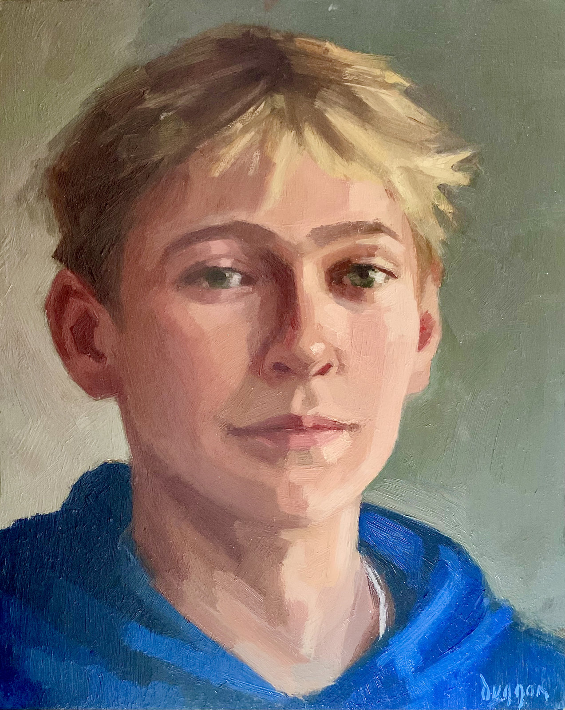
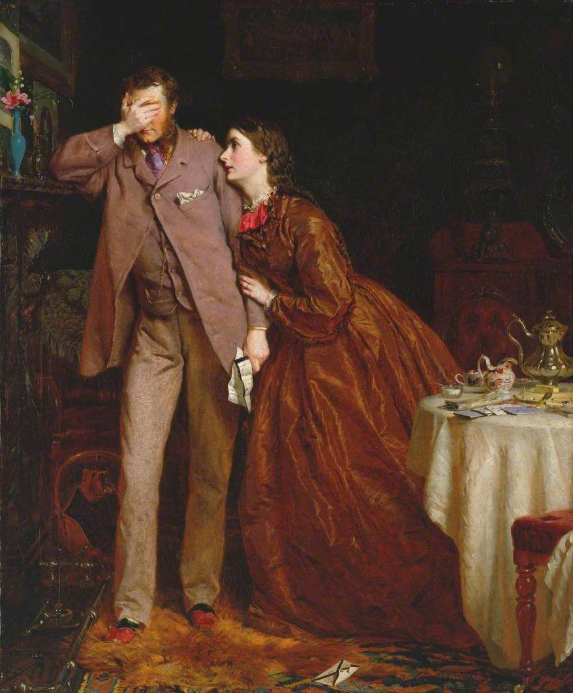
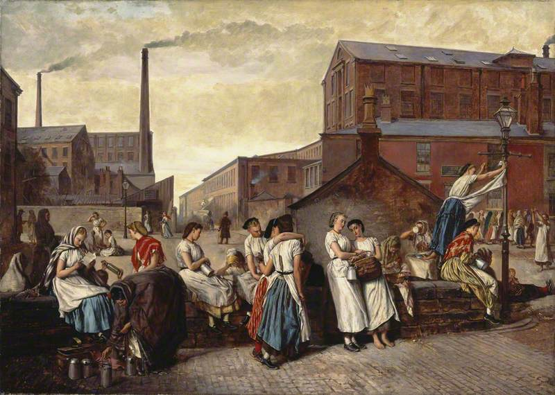

Sans JavaScript, tous les onglets restent visibles à la suite.
Présentation de la séquence
How does a teenager's secret diary reveal the family and the society of 1980s Britain?
The Secret Diary of Adrian Mole, Aged 13¾

In Context
Read, write, perform
Write a short secret-diary entry about one day, then read it aloud in 90 seconds.
The book in a nutshell
Leicester, England, 1 January 1981. Adrian Mole is thirteen and three quarters. He has spots, he thinks he is an intellectual, and nobody understands him.
Day after day, he writes down everything: his love for Pandora, the school bully, his parents' failing marriage, his friendship with an old man called Bert, and the big events of the year, from the Royal Wedding to rising unemployment.
The book was a huge bestseller in Britain and was turned into a TV series in 1985.
Final task · Summative assessment
Write and read aloud a week of your own secret diary, either as a teenager in 1981 or as a teenager today, showing how family, school and the world around you shape who you are.
Five dated entries, 180 to 250 words in all, then you read aloud or record your best entry (about 1 minute). You choose what you tell: a diary can stay secret.
Skills
Each activity shows the time it takes ("Time: 10 min") and the skills you practise:
| Tag | Skill | Programme (activité langagière) |
|---|---|---|
| CO | Listening | Listening |
| CE | Reading | Reading |
| PO | Speaking | Expression orale en continu, expression orale en interaction |
| PE | Writing | Expression écrite |
| Médiation | Explaining, passing on | Médiation |
Overview
| Lesson | Content | Skills | Time |
|---|---|---|---|
| 1 | Dear Diary: discovering the book (diagnostic) | CO · CE · PO · PE | 52 min |
| 2 | Meet Adrian Mole (and meet my PFMP tutor) | CE · PO | 52 min |
| 3 | A family falling apart | CE · PO · PE | 52 min |
| 4 | Old Bert and young Adrian: qualities that count | CE · PO | 52 min |
| 5 | Britain in the early 1980s: the world of work | CO · CE · PO · Médiation | 52 min |
| 6 | Then and now: language focus (reading check) | CO · CE · PE · PO | 52 min |
| 7 | Rules and rebels: at school and at work | CO · CE · PE | 52 min |
| 8 | Final task (1): writing my secret diary | PE | 52 min |
| 9 | Final task (2): reading my diary aloud | PO | 52 min |
| 10 | Final test | CO · CE · PE | 52 min |
Programme
Programme. Programme d'enseignement de langues vivantes des classes préparant au certificat d'aptitude professionnelle et des classes préparant au baccalauréat professionnel, arrêté du 3 avril 2019, BO spécial n° 5 du 11 avril 2019, en vigueur en seconde baccalauréat professionnel depuis la rentrée 2019. Niveau attendu en fin de baccalauréat professionnel : B1+ en langue A (B1 en langue B).
Contextes. Le programme ne fixe pas de liste de thèmes : le professeur choisit. Il distingue deux contextes, tous deux présents ici : « le contexte et les situations de la vie quotidienne, personnelle, sociale et civique » (le journal d'Adrian, la famille, l'école) et « le contexte et les situations de la vie professionnelle » (se présenter à un tuteur de PFMP, décrire une journée de travail, parler de ses qualités).
Language activities. Le programme reprend les cinq activités du CECRL : compréhension de l'oral, expression orale en continu, expression orale en interaction, compréhension de l'écrit, expression écrite ; il y ajoute la médiation. Chaque lesson indique lesquelles sont travaillées, avec leur durée.
Co-intervention. Les lessons 2, 4, 5 et 7 proposent un moment possible en co-intervention avec le professeur d'enseignement professionnel.
How to read the badges
- CO compréhension de l'oral (listening)
- CE compréhension de l'écrit (reading)
- PO production orale, en continu ou en interaction (speaking)
- PE production écrite (writing)
- Médiation médiation
- Time: 10 min durée de l'activité : un clic lance le minuteur
Student version cache la fiche prof, les corrigés, la Plan B et les notes de gestion de classe. Teacher version montre tout. Gérer les onglets permet de cacher les onglets inutiles.
Documents à télécharger
Chaque document existe en PDF, en Word (DOCX) et en LibreOffice (ODT), format A4, une colonne, gros caractères.
- AssessmentsPDFDOCXODT
- Fiche de lecturePDFDOCXODT
- MéthodesPDFDOCXODT
- Toutes les fiches imprimablesPDFDOCXODT
- Toute la Dys-friendly versionPDFDOCXODT
- Lesson 1Fiche :PDFDOCXODTFiche tempête :PDFDOCXODTDys :PDFDOCXODT
- Lesson 2Fiche :PDFDOCXODTFiche tempête :PDFDOCXODTDys :PDFDOCXODT
- Lesson 3Fiche :PDFDOCXODTFiche tempête :PDFDOCXODTDys :PDFDOCXODT
- Lesson 4Fiche :PDFDOCXODTFiche tempête :PDFDOCXODTDys :PDFDOCXODT
- Lesson 5Fiche :PDFDOCXODTFiche tempête :PDFDOCXODTDys :PDFDOCXODT
- Lesson 6Fiche :PDFDOCXODTFiche tempête :PDFDOCXODTDys :PDFDOCXODT
- Lesson 7Fiche :PDFDOCXODTFiche tempête :PDFDOCXODTDys :PDFDOCXODT
- Lesson 8Fiche :PDFDOCXODTFiche tempête :PDFDOCXODTDys :PDFDOCXODT
- Lesson 9Fiche :PDFDOCXODTFiche tempête :PDFDOCXODTDys :PDFDOCXODT
- Lesson 10Fiche :PDFDOCXODTFiche tempête :PDFDOCXODTDys :PDFDOCXODT
© 2026 Madame Carole Paoli Pompougnac · CC BY-NC-SA 4.0
Teacher’s notes : la séquence en un coup d'œil
Teacher notes are in British English. They are written for any colleague, including a beginner or a contract teacher who discovers the class the day before.
You are new to this sequence? Start here
Take a deep breath: everything you need is in this document. Each lesson works the same way, so after Lesson 1 you will know the routine.
- The day before: read the "Teacher’s notes" and "Timed lesson plan" tabs of the lesson (ten minutes). Print the "Fiche imprimable" for every student and two copies of the "Fiche tempête".
- Check the video, if there is one: open the link, watch the extract, note the exact start and end times in the box provided. Never show more than the extract.
- In class, follow the timing. Each lesson is timed on 52 minutes inside a 55-minute slot.
- At the Point d'arrêt (always around minute 44): if you are late, or the class is restless, switch to the Plan B (8 minutes): it secures the three outcomes of every lesson.
- Three outcomes, every lesson: a trace écrite in the notebook, one spoken contribution from every student (even one sentence), and homework.
- After the lesson: fill in the private "Météo de la classe" (two minutes).
You do not need to be an expert on the 1980s or on the novel: the keys give you the answers, and the reading plan tells you which entries matter.
Adapt access, never ambition
Students in Seconde baccalauréat professionnel read the same novel and do the same final task as any other class. What changes is the support: shorter reading sections, the teacher reading some entries aloud, word banks, sentence starters, more oral work before writing, and links with the students' future job. The expectations stay high and the students are told so.
Reading plan (key entries)
The whole novel is a long read for some students. Each lesson names the key entries to read; the teacher summarises the rest in the "Story so far" box. Reading the whole book stays the goal for confident readers.
| Before | Key entries |
|---|---|
| Lesson 2 | Thursday January 1st to the first week of January |
| Lesson 3 | Wednesday January 21st (the Lucases), then the entries in which Mum leaves (dates given by the teacher) |
| Lesson 4 | Monday January 19th and the first visits to Bert |
| Lesson 5 | The Royal Wedding (Wednesday July 29th) and the entries in which Adrian's father loses his job (dates given by the teacher) |
| Lesson 7 | The red socks (from Saturday June 6th) |
Programme : ce que demande l'institution
- Texte de référence : arrêté du 3 avril 2019, BO spécial n° 5 du 11 avril 2019 (NOR MENE1908627A), programme de langues vivantes des classes préparant au CAP et au baccalauréat professionnel.
- Niveau : B1+ in langue A at the end of the baccalauréat professionnel; in Seconde, students progress from A2 towards B1.
- Language activities : compréhension de l'oral, expression orale en continu, expression orale en interaction, compréhension de l'écrit, expression écrite, and médiation.
- Contextes : daily, personal, social and civic life (Adrian's diary, family, school) and professional life (PFMP, the job).
- Tasks named by the programme and used here: giving information about oneself and one's personal surroundings; expressing personal ideas and feelings; understanding a short personal text (letter, email) and answering it; describing an everyday task or a working day; presenting one's experience, skills and qualities.
- Start of the year: this sequence works well as the first sequence of Seconde ("Who am I?"). It does not repeat the national positioning tests (French and mathematics); Lesson 1 includes a short diagnostic for the sequence only, which feeds the consolidation work of the first weeks.
- Outils linguistiques : will and be going to, present simple, past simple and past continuous, must, have to, should, the passive (was / were), used to, past simple and present perfect, polite requests, time expressions, exclamations.
Liens avec le métier et la PFMP
| Lesson | Link with the job and the PFMP |
|---|---|
| 1 | One New Year's resolution about the job or the PFMP |
| 2 | Introduce yourself to your PFMP tutor (one minute) |
| 4 | Professional qualities: patience, reliability, respect |
| 5 | The world of work in 1981: factories, jobs, apprenticeships; describe a working day |
| 7 | Rules at work: uniform, safety clothing, punctuality; a polite email to a tutor |
| 8 | Final task, option B: one entry can describe a day of PFMP |
Co-intervention: Lessons 2, 4, 5 and 7 each include a ten-minute moment that the professional teacher can lead with you (vocabulary of the job, safety rules, qualities expected by companies).
Évaluations prévues
| When | Type | What |
|---|---|---|
| Lesson 1 | Diagnostic for the sequence | Short listening, writing and speaking tasks, not marked |
| Lessons 1 to 9 | Formative | Flash quiz at the start, exit sentence at the end |
| Lesson 6 | Mid-point | Reading check (10 questions) and a short "then and now" talk |
| Lessons 8 and 9 | Summative | Final task: my secret diary, written and read aloud |
| Lesson 10 | Summative | Final test: listening, reading, writing, out of 20 |
Every evaluation comes with a student sheet, a teacher grid, a self-correction grid, a key, a mark scheme with a language criterion, the method "Savoir prendre une correction" and a "Mes objectifs" box.
Ton et précautions
- Family themes: never ask a student to talk about their own family. Speaking tasks are about Adrian or an invented character. In personal writing, students have the right not to tell everything.
- The early 1980s: facts only, no judgement on Margaret Thatcher or her government. Some students' families know unemployment: talk about the characters, never about the students' parents.
- Exchanges in class: no debate with two camps; a structured exchange based on the text, each student in turn.
Matériel
One copy of the novel per student, or at least one per pair with the key entries marked; a notebook "My Adrian Mole notebook"; flashcards; a projector and speakers; phones or recorders for Lesson 9.
Droit d'auteur
The novel is protected by copyright. Students read in their own copy, and entries are named by their date. The few very short quotations here were checked and are given with the date of the entry. The texts for reading in Lesson 5 and in the final test, and the model entries, were written for this sequence.
© 2026 Madame Carole Paoli Pompougnac · CC BY-NC-SA 4.0
Lesson 1 · Dear Diary: discovering the book
Diagnostic lesson. Context: personal life and professional life. Grammar point: will / be going to.
Pour les élèves
Today you will: discover the book and its narrator, read the first entry of the diary, and write your own New Year's resolutions, including one about your future job.
1. Getting started: the cover and the title
- Look at the portrait on the cover of the sequence (Accueil tab). How old is the boy? How does he look?
- Read the title: The Secret Diary of Adrian Mole, Aged 13¾. Why is "13¾" funny?
- Do people still keep a diary today? Where? (a notebook, a phone, social media…)
Useful phrases: He is about… He looks… I think… because…
Spirale de Gorse
Méthode conçue par Madame Carole Paoli Pompougnac. Le nom rend hommage à sa grand-mère par alliance, Madame Armandine Gorse, avec un S. On gravit un texte, un audio ou une image comme une pente : chaque tour est une prise plus haute. On part de ce qui saute aux yeux, puis l'attention se resserre, jusqu'à la pointe, le sommet où l'essentiel se laisse voir. Quatre tours, puis la pointe. À appliquer, dans chaque lesson, au document principal (texte, image ou audio). Les réponses détaillées restent en Teacher version.

Je remarque (I notice)
Ce qui saute aux yeux, la première impression.
I notice… / This is about…
Je repère (I spot)
Un détail, un passage, un élément plus net.
I spot… / The key word is…
Je comprends (I understand)
Ce que ces éléments permettent de comprendre.
This shows that… / They have in common…
J'anticipe (I anticipate)
La visée du texte, ce qu'il faut en faire.
The text wants me to… / I anticipate…
Je trouve le sens (I find the meaning)
La pointe, le point final : l'essentiel que l'on peut défendre, et sa limite. Ce point final cadre et recentre la démarche. Il évite le hors-sujet et les conclusions hâtives qui fausseraient l'analyse du texte. On peut finir par une brève ouverture sur un autre débat.
The point is… / I keep to the text: … / I stay focused on… / Beyond this, other questions may arise and open up further exploration.
2. Getting to know you (diagnostic)
Part A, listening (4 min). Your teacher reads a short diary entry twice. Tick the right answer.
- The writer is: ☐ 12 ☐ 14 ☐ 16 years old.
- Today is: ☐ Monday ☐ Friday ☐ Sunday.
- The writer is worried about: ☐ a test ☐ a match ☐ a party.
- The writer's sister: ☐ helped ☐ laughed ☐ was not at home.
- Tomorrow, the writer is going to: ☐ revise ☐ go shopping ☐ stay in bed.
Part B, writing (5 min). Complete: My name is… I am… years old. I am training to be a… I like… This year I would like to… Nobody else will read it.
3. Video: meet the author
Sue Townsend on "Open House with Gloria Hunniford", Thames Television, 1999, chaîne officielle ThamesTv : https://www.youtube.com/watch?v=3nN3zWdS0pc (extract proposed: 0:00 to 3:00, to confirm when your teacher previews it).
Listen and tick: Sue Townsend is ☐ a singer ☐ a writer. She talks about ☐ Adrian Mole ☐ a football team. Note one word you understand: ________
4. Reading: New Year's resolutions
Read the first entry, Thursday January 1st, in your copy (your teacher reads it aloud first). It starts with a list of resolutions:
"I will help the blind across the road." "I will hang my trousers up." (Thursday January 1st)
- Copy three resolutions of Adrian.
- Sort them: helping others / about himself.
- What problem does Adrian find on his chin?
- What did his father do on New Year's Eve?
5. Grammar in context: will / be going to
Rule. Will = a promise or a decision: I will help…, I won't smoke. Be going to = a plan, or something we can see coming: He is going to break his resolutions!
Exercise 1. Will or going to?
- Look at those clouds! It ___ rain.
- I promise I ___ hang my trousers up.
- Adrian has a new diary: he ___ write in it every day.
- "I'm cold." "Wait, I ___ close the window."
- Adrian has a spot on his chin: he ___ be in a bad mood today.
Exercise 2. My resolutions. Write four resolutions: two for school or home, one for your job or your PFMP (I will arrive on time at my PFMP. I am going to learn…), and one funny one.
Point d'arrêt (minute 44)
6. Speaking round: my job resolution
Each student reads their resolution about the job or the PFMP.
Building your vocabulary
| Theme words | Words to speak and argue |
|---|---|
| a diary, an entry, a resolution | I think that… |
| a spot, a promise | He looks… / He seems… |
| to keep, to break a promise | Maybe… / Probably… |
| a job, a PFMP, a tutor | First… then… |
| on time, to learn, to train | because, so, but |
Flashcards. Make the flashcards of the lesson (method in the Méthodes tab): front = the word or the structure, back = a definition in English, an example from the book and a drawing or a translation. Revise them for two minutes at home tonight, then in two days, then at the start of the next lesson (Flash quiz).
Model flashcard 1. Front: a resolution. Back: a promise to yourself on 1 January. "I will hang my trousers up."
Model flashcard 2. Front: will / going to. Back: will = I promise; going to = my plan.
Blank flashcard. Front: ________ Back: ________
Lesson summary
Copy it into your exercise book.
Lesson 1. Dear Diary. The Secret Diary of Adrian Mole, Aged 13¾ (Sue Townsend, 1982) is a novel written as a diary. Adrian lives in Leicester and starts his diary on 1 January 1981. He makes resolutions with will, but he is going to break them: we understand more than Adrian. My resolution for my job: ________
| Minutes | Activity | Activité langagière (programme) | Tag | Teacher |
|---|---|---|---|---|
| 0 to 3 | Settling in, date | Expression orale en interaction | PO | Greets |
| 3 to 10 | Cover and title | Expression orale en continu, en interaction | PO | Notes each speaker's level (diagnostic) |
| 10 to 19 | Diagnostic: listening and writing | Listening, expression écrite | CO, PE | Reads the text twice, collects Part B |
| 19 to 23 | Video: Sue Townsend | Listening | CO | Shows the extract once |
| 23 to 35 | Reading Thursday January 1st | Reading | CE | Reads aloud first, then pairs |
| 35 to 44 | Will / going to, my resolutions | Expression écrite | PE | Helps individually |
| 44 | Point d'arrêt | Late? Plan B | ||
| 44 to 49 | Round: my job resolution | Expression orale en continu | PO | Every student speaks |
| 49 to 52 | Lesson summary and homework | Expression écrite | PE | Projects |
| Activité langagière (programme 2019) | In this lesson | Time |
|---|---|---|
| Listening | Diagnostic Part A; video | 8 min |
| Reading | Thursday January 1st | 12 min |
| Expression orale en continu | Describing the cover; job resolution | 9 min |
| Expression orale en interaction | Questions and answers about the title | 4 min |
| Expression écrite | Diagnostic Part B; resolutions; trace écrite | 12 min |
| Médiation | Not in this lesson | 0 min |
Diagnostic (not marked). The teacher fills in the diagnostic grid (Évaluations tab) with ✓ (secure), ~ (in progress) or ○ (not yet) for CO, PE and PO. It helps to form pairs and to plan the consolidation work of the first weeks; it does not repeat the positioning tests.
Text for Part A, to read twice (written for this sequence):
Sunday 8th September. I am fourteen today and nobody remembered. Well, Mum remembered at lunchtime. Tomorrow I have a maths test and I haven't revised. My sister laughed when I told her. I am going to revise tonight. Or maybe tomorrow morning.
Corrigé (prof), getting started. 1. He is a teenager; he looks calm, serious, a bit shy (accept any justified answer). 2. Only children count quarters of years: Adrian wants to look grown-up but sounds like a child. 3. Notebooks, phone notes, private accounts, video diaries.
Corrigé (prof), diagnostic Part A. 1. 14. 2. Sunday. 3. a test. 4. laughed. 5. revise.
Corrigé (prof), video. a writer; Adrian Mole; any word heard.
Corrigé (prof), reading. 1. For example: help the blind across the road, hang his trousers up, be kind to the dog. 2. Others: the blind, the poor, the dog. Himself: trousers, spots, smoking, alcohol. 3. A spot. 4. He drank too much (he also got the dog drunk).
Corrigé (prof), exercise 1. 1. is going to 2. will 3. is going to 4. will 5. is going to.
Grille "My resolutions" (formative, /5). Four resolutions /2 · will / going to /2 · one job resolution /1.
- Minutes 44 to 47: trace écrite, copied in silence.
- Minutes 47 to 51: chain: each student says I will… or I won't…
- Minute 51: homework.
Fiche tempête (exercice de repli, imprimable)
For a student who needs to step aside. Thanks to this printed sheet, the student can take their work and continue elsewhere, supervised by another adult (vie scolaire, CDI, infirmerie), as arranged with the vie scolaire at the start of the year.
Fiche tempête, for a calm moment on your own. Take your time. No mark, no rush.
Task. 1. Copy the five words of the vocabulary box and draw a small picture for each. 2. Read the first entry (Thursday January 1st) again. 3. Write three resolutions for your first day of PFMP: I will…
When you feel ready, write one sentence: Right now I feel… / Tomorrow I would like to… You can keep this sentence for yourself.
Fiche tempête, Lesson 1
- Pairs formed after the diagnostic from Lesson 2: one confident student with one less confident student.
- The round: start with the quietest students. Reading from the notebook is fine.
- Phones: in bags, except for recording in Lesson 9.
Météo de la classe (prof, privé)
Private block, never shown to students. Fill it in two minutes after the lesson.
| Today | Sunny | Cloudy | Stormy |
|---|---|---|---|
| Overall mood of the group | ☐ | ☐ | ☐ |
| Energy at the start / at the end | ☐ / ☐ | ☐ / ☐ | ☐ / ☐ |
| Did every student speak once? | ☐ yes | ☐ almost | ☐ no: names to start with next time |
| Student(s) to check on quietly next lesson (initials only) |
One line for next time: what worked, what to change.
Aide (prof) : un élève en difficulté émotionnelle
Gentle note, teacher version only. The novel talks about parents arguing and separating, about loneliness and about an old man living alone. Some students live these situations at home. If a student goes quiet, cries or leaves the activity:
- Do not ask questions in front of the class. Say calmly: "You can take a break. Take your sheet with you."
- Offer the printed Fiche tempête of the lesson (below). The student keeps working, alone and in calm conditions.
- If needed, the student goes to the vie scolaire, the CDI or the infirmerie with the sheet, as agreed with the vie scolaire at the start of the year, and continues there under the supervision of another adult.
- After the lesson, a short private word: "I noticed today was hard. Do you want to talk to someone?" Then pass the information on through the usual channels (CPE, infirmière, assistante sociale, psychologue de l'Éducation nationale), without details in front of anyone.
- Never ask a student to talk about their own family in class. All speaking tasks are about Adrian's family or about an invented character. In personal writing, every student has the right not to tell everything.
- Aim: start the book, find out the level of the group, and link the diary to the students' future job.
- Reading support: read the first entry aloud yourself before the students read it: they hear the humour and the pronunciation.
- Start of the year: if this is the first sequence of seconde, the diagnostic feeds the consolidation work, without repeating the positioning tests.
- Pronunciation: diary /ˈdaɪəri/, resolution /ˌrezəˈluːʃn/.
- Learn the vocabulary box and make two flashcards.
- Read the first week of January in your copy.
- Write two more resolutions for Adrian.
Word bank: diary, resolution, spot, promise, job, PFMP, tutor, on time.
Lesson 1 · Dear Diary.
- Look at the cover. Say: The boy is… He looks…
- Listen. Tick the answers.
- Write: My name is… I am… I am training to be a…
- Read Thursday January 1st. Underline will.
- Write 3 resolutions: I will… / I won't… / I'm going to… One is about your job.
Dys-friendly version, Lesson 1
Lesson 1 · Dear Diary · Name: ________ · Date: ________
- The cover: ________
- Diagnostic Part A: 1 ☐☐☐ 2 ☐☐☐ 3 ☐☐☐ 4 ☐☐☐ 5 ☐☐☐
- Diagnostic Part B: ________
- Video: ________
- Adrian's resolutions: ________
- Exercise 1: 1 ________ 2 ________ 3 ________ 4 ________ 5 ________
- My resolutions (one for my job): ________
- Lesson summary: ________
Documents à télécharger
Fiche imprimable, Lesson 1
Fiche tempête, Lesson 1
Dys-friendly version, Lesson 1
© 2026 Madame Carole Paoli Pompougnac · CC BY-NC-SA 4.0
Lesson 2 · Meet Adrian Mole (and meet my PFMP tutor)
Context: personal life and professional life. Grammar point: present simple (be, have, live, like, think). Co-intervention possible.
Pour les élèves
Today you will: build Adrian's ID card, describe his personality, and introduce yourself in one minute, as if you were meeting your PFMP tutor.
The story so far: in January, Adrian writes about his spots, his parents, his dog, his friend Nigel, the school bully Barry Kent and a new girl, Pandora.
1. Flash quiz (Lesson 1)
- Where does Adrian live? 2. When does he start his diary? 3. Complete: "I ___ (promise) help the blind." 4. Complete: "Look, he ___ (plan) cry." 5. Give one of your resolutions for your job.
Spirale de Gorse
Méthode conçue par Madame Carole Paoli Pompougnac. Le nom rend hommage à sa grand-mère par alliance, Madame Armandine Gorse, avec un S. On gravit un texte, un audio ou une image comme une pente : chaque tour est une prise plus haute. On part de ce qui saute aux yeux, puis l'attention se resserre, jusqu'à la pointe, le sommet où l'essentiel se laisse voir. Quatre tours, puis la pointe. À appliquer, dans chaque lesson, au document principal (texte, image ou audio). Les réponses détaillées restent en Teacher version.
Je remarque (I notice)
Ce qui saute aux yeux, la première impression.
I notice… / This is about…
Je repère (I spot)
Un détail, un passage, un élément plus net.
I spot… / The key word is…
Je comprends (I understand)
Ce que ces éléments permettent de comprendre.
This shows that… / They have in common…
J'anticipe (I anticipate)
La visée du texte, ce qu'il faut en faire.
The text wants me to… / I anticipate…
Je trouve le sens (I find the meaning)
La pointe, le point final : l'essentiel que l'on peut défendre, et sa limite. Ce point final cadre et recentre la démarche. Il évite le hors-sujet et les conclusions hâtives qui fausseraient l'analyse du texte. On peut finir par une brève ouverture sur un autre débat.
The point is… / I keep to the text: … / I stay focused on… / Beyond this, other questions may arise and open up further exploration.
2. Reading: Adrian's ID card
Using the first January entries and the word bank, complete Adrian's ID card.
| Information | |
|---|---|
| Name and age | |
| Town | |
| Family | |
| Best friend | |
| Enemy | |
| Love interest | |
| Worries | |
| Dream |
Word bank: Leicester, George and Pauline, Nigel, Barry Kent, Pandora, his spots, a poet, the dog.
3. Vocabulary: describing a personality
Choose three adjectives for Adrian and give an example: self-centred, naive, sensitive, lonely, funny, anxious, honest, dramatic.
Adrian is anxious because he worries about his spots.
4. Grammar in context: the present simple
Rule. To describe a person or to introduce yourself: present simple. I live in… I am… I like… He lives in Leicester. He thinks he is a poet. With he / she, add -s: he lives, he likes, he thinks. Negative: he doesn't like.
Exercise 1.
- Adrian (live) ___ in Leicester.
- He (not / like) ___ Barry Kent.
- Pandora (have) ___ a lot of confidence.
- I (be) ___ a student in a lycée professionnel.
- My PFMP tutor (work) ___ in a company near my town.
5. Speaking: meet me, from Adrian to my PFMP tutor
Prepare a one-minute presentation of yourself for your future PFMP tutor: name, age, school, the job you are training for, one quality, one thing you want to learn. Your partner plays the tutor and asks one question.
Hello, my name is… I am… years old. I am a student at… I am training to be a… I am (reliable / punctual / careful)… I would like to learn… Nice to meet you.
Co-intervention: the professional teacher can give the names of real tasks and qualities of the job.
Point d'arrêt (minute 44)
6. Round
Every student says two sentences: I am training to be a… I am… (a quality).
Building your vocabulary
| Theme words | Words to speak and argue |
|---|---|
| self-centred, naive, anxious | He thinks he is… but in fact… |
| a tutor, a company, a trainee | I am training to be a… |
| reliable, punctual, careful, polite | I would like to learn… |
| to introduce yourself | Nice to meet you. |
| dramatic irony | For example… |
Flashcards. Make the flashcards of the lesson (method in the Méthodes tab): front = the word or the structure, back = a definition in English, an example from the book and a drawing or a translation. Revise them for two minutes at home tonight, then in two days, then at the start of the next lesson (Flash quiz).
Model flashcard. Front: reliable. Back: people can count on you. "I am reliable: I always finish my work."
Blank flashcard. Front: ________ Back: ________
Lesson summary
Copy it into your exercise book.
Lesson 2. Meet Adrian Mole. Adrian Mole, 13¾, lives in Leicester with his parents and the dog. He is naive and anxious, and he thinks he is a poet, but in fact he does not understand many things: the reader sees what Adrian does not see (dramatic irony). To introduce myself: My name is… I am training to be a… I am reliable.
| Minutes | Activity | Activité langagière (programme) | Tag | Teacher |
|---|---|---|---|---|
| 0 to 3 | Settling in | Expression orale en interaction | PO | Greets |
| 3 to 7 | Flash quiz | Expression écrite | PE | Corrects orally |
| 7 to 21 | ID card | Reading | CE | Pairs |
| 21 to 27 | Personality adjectives | Reading, expression orale | CE, PO | Collects examples |
| 27 to 34 | Present simple | Expression écrite | PE | Explains, corrects |
| 34 to 44 | Meet my PFMP tutor | Expression orale en interaction | PO | Co-intervention possible |
| 44 | Point d'arrêt | Late? Plan B | ||
| 44 to 49 | Round | Expression orale en continu | PO | Every student speaks |
| 49 to 52 | Lesson summary and homework | Expression écrite | PE | Projects |
| Activité langagière (programme 2019) | In this lesson | Time |
|---|---|---|
| Listening | Listening to the partner's questions | 2 min |
| Reading | ID card, adjectives | 20 min |
| Expression orale en continu | Round | 5 min |
| Expression orale en interaction | Meet my PFMP tutor | 10 min |
| Expression écrite | Flash quiz, exercise, trace écrite | 14 min |
| Médiation | Not in this lesson | 0 min |
Formative. Flash quiz (/5). The one-minute presentation can be assessed with the grid below; it is a skill the students will use in their real PFMP.
Corrigé (prof), flash quiz. 1. Leicester. 2. 1 January 1981. 3. will 4. is going to 5. Personal answer with will or going to.
Corrigé (prof), ID card. Adrian Mole, 13¾; Leicester; his parents George and Pauline, the dog; Nigel; Barry Kent, the school bully; Pandora; his spots, his parents; to be a famous poet or intellectual.
Corrigé (prof), adjectives. Anxious: he worries about his spots. Self-centred and dramatic: a spot is a tragedy. Naive: he does not see the problems of his parents.
Corrigé (prof), exercise 1. 1. lives 2. doesn't like 3. has 4. am 5. works.
Grille, meet my PFMP tutor (/10, formative). Content (name, age, school, job, quality, wish): /4 · Interaction (answers the tutor's question): /2 · Langue (present simple, -s): /3 · Pronunciation: /1.
- Minutes 44 to 47: trace écrite.
- Minutes 47 to 51: round: I am training to be a… I am…
- Minute 51: homework.
Fiche tempête (exercice de repli, imprimable)
For a student who needs to step aside. Thanks to this printed sheet, the student can take their work and continue elsewhere, supervised by another adult (vie scolaire, CDI, infirmerie), as arranged with the vie scolaire at the start of the year.
Fiche tempête, for a calm moment on your own. Take your time. No mark, no rush.
Task. 1. Complete Adrian's ID card with the word bank. 2. Write your own ID card: name, age, school, job, one quality. 3. Draw Adrian as he sees himself and as we see him.
When you feel ready, write one sentence: Right now I feel… / Tomorrow I would like to… You can keep this sentence for yourself.
Fiche tempête, Lesson 2
- Pairs from the diagnostic. The "tutor" stands up: it makes the role play more real.
- Students not sure about their job yet: they say I am in a class of… I would like to work in…
Météo de la classe (prof, privé)
Private block, never shown to students. Fill it in two minutes after the lesson.
| Today | Sunny | Cloudy | Stormy |
|---|---|---|---|
| Overall mood of the group | ☐ | ☐ | ☐ |
| Energy at the start / at the end | ☐ / ☐ | ☐ / ☐ | ☐ / ☐ |
| Did every student speak once? | ☐ yes | ☐ almost | ☐ no: names to start with next time |
| Student(s) to check on quietly next lesson (initials only) |
One line for next time: what worked, what to change.
Aide (prof) : un élève en difficulté émotionnelle
Gentle note, teacher version only. The novel talks about parents arguing and separating, about loneliness and about an old man living alone. Some students live these situations at home. If a student goes quiet, cries or leaves the activity:
- Do not ask questions in front of the class. Say calmly: "You can take a break. Take your sheet with you."
- Offer the printed Fiche tempête of the lesson (below). The student keeps working, alone and in calm conditions.
- If needed, the student goes to the vie scolaire, the CDI or the infirmerie with the sheet, as agreed with the vie scolaire at the start of the year, and continues there under the supervision of another adult.
- After the lesson, a short private word: "I noticed today was hard. Do you want to talk to someone?" Then pass the information on through the usual channels (CPE, infirmière, assistante sociale, psychologue de l'Éducation nationale), without details in front of anyone.
- Never ask a student to talk about their own family in class. All speaking tasks are about Adrian's family or about an invented character. In personal writing, every student has the right not to tell everything.
- Aim: characterise the narrator and train a real professional skill: introducing oneself to a tutor (programme: "exposer ses expériences, ses compétences, ses qualités").
- Dramatic irony: introduce the term simply: we see what Adrian does not see.
- Co-intervention: ten minutes with the professional teacher on the qualities expected in the job.
- Learn the vocabulary box and make two flashcards.
- Read the entry of Wednesday January 21st and the entries chosen by your teacher.
- Write your presentation for your PFMP tutor (five sentences) and learn it.
Word bank: Leicester, Nigel, Pandora, Barry Kent, spots, poet, naive, anxious, reliable, punctual, careful.
Lesson 2 · Meet Adrian Mole.
- Fill in the ID card with the word bank.
- Choose 2 adjectives for Adrian.
- Write: Adrian lives… He is… He thinks…
- Write 3 sentences: My name is… I am training to be a… I am…
Dys-friendly version, Lesson 2
Lesson 2 · Meet Adrian Mole · Name: ________ · Date: ________
- Flash quiz: 1 ________ 2 ________ 3 ________ 4 ________ 5 ________
- Adrian's ID card: ________
- Three adjectives and examples: ________
- Exercise 1: 1 ________ 2 ________ 3 ________ 4 ________ 5 ________
- My presentation for my PFMP tutor: ________
- Lesson summary: ________
Documents à télécharger
Fiche imprimable, Lesson 2
Fiche tempête, Lesson 2
Dys-friendly version, Lesson 2
© 2026 Madame Carole Paoli Pompougnac · CC BY-NC-SA 4.0
Lesson 3 · A family falling apart
Context: personal and social life. Grammar point: past simple (regular and irregular verbs) and past continuous.


Pour les élèves
Today you will: read the entries in which Adrian's mother leaves home, explain Adrian's feelings, and imagine a short conversation between Adrian and his father.
The story so far: the neighbours, Mr and Mrs Lucas, separate. Adrian writes: "They are the first down our road." (Wednesday January 21st). Then his own parents argue more and more.
1. Flash quiz (Lesson 2)
- Who is Pandora? 2. Who is Barry Kent? 3. Complete: "Adrian ___ (live) in Leicester." 4. Give one quality for your job. 5. Complete: "I am training to be a ___."
Spirale de Gorse
Méthode conçue par Madame Carole Paoli Pompougnac. Le nom rend hommage à sa grand-mère par alliance, Madame Armandine Gorse, avec un S. On gravit un texte, un audio ou une image comme une pente : chaque tour est une prise plus haute. On part de ce qui saute aux yeux, puis l'attention se resserre, jusqu'à la pointe, le sommet où l'essentiel se laisse voir. Quatre tours, puis la pointe. À appliquer, dans chaque lesson, au document principal (texte, image ou audio). Les réponses détaillées restent en Teacher version.
Je remarque (I notice)
Ce qui saute aux yeux, la première impression.
I notice… / This is about…
Je repère (I spot)
Un détail, un passage, un élément plus net.
I spot… / The key word is…
Je comprends (I understand)
Ce que ces éléments permettent de comprendre.
This shows that… / They have in common…
J'anticipe (I anticipate)
La visée du texte, ce qu'il faut en faire.
The text wants me to… / I anticipate…
Je trouve le sens (I find the meaning)
La pointe, le point final : l'essentiel que l'on peut défendre, et sa limite. Ce point final cadre et recentre la démarche. Il évite le hors-sujet et les conclusions hâtives qui fausseraient l'analyse du texte. On peut finir par une brève ouverture sur un autre débat.
The point is… / I keep to the text: … / I stay focused on… / Beyond this, other questions may arise and open up further exploration.
2. Look and speak
- Look at the man and the woman. How does the man feel? What is the woman doing?
- What do you think the letter in his hand says?
Useful phrases: The man looks… The woman is… Maybe the letter says…
3. Reading: Mum leaves
Your teacher reads the key entries in which Adrian's mother leaves with Mr Lucas (dates on the board). Then read them again in your copy.
- Who does Adrian's mother leave with? ☐ Mr Lucas ☐ Mr Scruton ☐ Bert
- Find two words that show Adrian's feelings.
- Complete: After she leaves, his father ___ and the house ___.
- Is this part of the book sad, funny, or both? Why?
4. Grammar in context: past simple and past continuous
Rule. Past simple for the main events: She left. She took her things. Irregular verbs: leave, left; take, took; feel, felt; go, went. Past continuous (was / were + -ing) for the background: His father was sitting in the kitchen when she left.
Exercise 1. Past simple or past continuous?
- When Adrian (come) ___ home, his father (sit) ___ in the dark.
- His mother (leave) ___ with Mr Lucas.
- Adrian (write) ___ in his diary when the phone (ring) ___.
- Adrian (feel) ___ very sad.
5. Role play: Adrian and his father
In pairs: Adrian asks his father three questions the evening after his mother has left. The father answers. You play the characters of the book only.
Where did Mum go? Why did she leave? What are we going to eat? I don't know, son. She…
Point d'arrêt (minute 44)
6. Performances and round
Two pairs perform. Then every student says: When his mother left, Adrian felt…
Building your vocabulary
| Theme words | Words to speak and argue |
|---|---|
| to argue, to leave, to split up | It is sad because… |
| hurt, shocked, upset, lonely | It is funny because… |
| to cope with | I think… |
| the neighbour, a divorce | When… / While… |
| a mess, to clean, to cook | Both… and… |
Flashcards. Make the flashcards of the lesson (method in the Méthodes tab): front = the word or the structure, back = a definition in English, an example from the book and a drawing or a translation. Revise them for two minutes at home tonight, then in two days, then at the start of the next lesson (Flash quiz).
Model flashcard. Front: to leave, left, left. Back: partir, quitter. "His mother left with Mr Lucas."
Blank flashcard. Front: ________ Back: ________
Lesson summary
Copy it into your exercise book.
Lesson 3. A family falling apart. Adrian's mother left home with Mr Lucas, the neighbour. Adrian felt shocked and lonely, and his father could not cope: the house was a mess. It is sad, but Adrian's naive voice also makes it funny. At that time, more and more couples were divorcing in Britain.
| Minutes | Activity | Activité langagière (programme) | Tag | Teacher |
|---|---|---|---|---|
| 0 to 3 | Settling in | Expression orale en interaction | PO | Greets |
| 3 to 7 | Flash quiz | Expression écrite | PE | Corrects orally |
| 7 to 12 | Painting | Expression orale en continu | PO | Guides |
| 12 to 28 | Reading: Mum leaves | Listening, compréhension de l'écrit | CO, CE | Reads aloud, then pairs |
| 28 to 36 | Past simple and past continuous | Expression écrite | PE | Explains, corrects |
| 36 to 44 | Role play preparation | Expression orale en interaction | PO | Walks around |
| 44 | Point d'arrêt | Late? Plan B | ||
| 44 to 49 | Performances and round | Expression orale en interaction, en continu | PO | Every student speaks |
| 49 to 52 | Lesson summary and homework | Expression écrite | PE | Projects |
| Activité langagière (programme 2019) | In this lesson | Time |
|---|---|---|
| Listening | Teacher reads the entries aloud | 5 min |
| Reading | Entries in which Mum leaves | 11 min |
| Expression orale en continu | Painting; round | 7 min |
| Expression orale en interaction | Role play | 11 min |
| Expression écrite | Flash quiz, exercise, trace écrite | 15 min |
| Médiation | Not in this lesson | 0 min |
Formative. Flash quiz (/5); role play with the grid below.
Corrigé (prof), flash quiz. 1. A girl in Adrian's class; he loves her. 2. The school bully. 3. lives 4. For example: reliable, punctual. 5. Personal answer.
Corrigé (prof), painting. The man looks shocked and sad; he holds a letter with bad news. The woman holds his hand and comforts him. Accept any reasonable idea for the letter.
Corrigé (prof), reading. 1. Mr Lucas. 2. For example: shocked, upset, hurt, lonely (check the words in your copy). 3. His father is miserable and does not cook or clean; the house is a mess. 4. Both: the facts are sad, but Adrian thinks about small things, like his meals, and that makes us smile.
Corrigé (prof), exercise 1. 1. came / was sitting 2. left 3. was writing / rang 4. felt.
Grille, role play (/10, formative). Asks and answers three questions: /4 · Faithful to the book: /2 · Langue (past simple, questions with did): /3 · Pronunciation: /1.
- Minutes 44 to 47: trace écrite.
- Minutes 47 to 51: round: When his mother left, Adrian felt…
- Minute 51: homework.
Fiche tempête (exercice de repli, imprimable)
For a student who needs to step aside. Thanks to this printed sheet, the student can take their work and continue elsewhere, supervised by another adult (vie scolaire, CDI, infirmerie), as arranged with the vie scolaire at the start of the year.
Fiche tempête, for a calm moment on your own. Take your time. No mark, no rush.
Task. 1. Copy the vocabulary box. 2. Copy five irregular verbs with their past form (leave, left…). 3. You can simply read the next entries of the book quietly.
When you feel ready, write one sentence: Right now I feel… / Tomorrow I would like to… You can keep this sentence for yourself.
Fiche tempête, Lesson 3
- Before the lesson: a private word to a student you know is going through a family change: "Today we read about Adrian's parents. If it is too much, take the Fiche tempête."
- Role play: students play Adrian and his father only.
Météo de la classe (prof, privé)
Private block, never shown to students. Fill it in two minutes after the lesson.
| Today | Sunny | Cloudy | Stormy |
|---|---|---|---|
| Overall mood of the group | ☐ | ☐ | ☐ |
| Energy at the start / at the end | ☐ / ☐ | ☐ / ☐ | ☐ / ☐ |
| Did every student speak once? | ☐ yes | ☐ almost | ☐ no: names to start with next time |
| Student(s) to check on quietly next lesson (initials only) |
One line for next time: what worked, what to change.
Aide (prof) : un élève en difficulté émotionnelle
Gentle note, teacher version only. The novel talks about parents arguing and separating, about loneliness and about an old man living alone. Some students live these situations at home. If a student goes quiet, cries or leaves the activity:
- Do not ask questions in front of the class. Say calmly: "You can take a break. Take your sheet with you."
- Offer the printed Fiche tempête of the lesson (below). The student keeps working, alone and in calm conditions.
- If needed, the student goes to the vie scolaire, the CDI or the infirmerie with the sheet, as agreed with the vie scolaire at the start of the year, and continues there under the supervision of another adult.
- After the lesson, a short private word: "I noticed today was hard. Do you want to talk to someone?" Then pass the information on through the usual channels (CPE, infirmière, assistante sociale, psychologue de l'Éducation nationale), without details in front of anyone.
- Never ask a student to talk about their own family in class. All speaking tasks are about Adrian's family or about an invented character. In personal writing, every student has the right not to tell everything.
- Aim: understand the family crisis through Adrian's eyes; past tenses for telling a story.
- Mise en perspective: in the early 1980s divorce rose sharply in Britain, after the Divorce Reform Act of 1969 (in force from 1971). Keep it factual and about the book.
- Dates: check the dates of the entries in which Pauline leaves in your copy and write them on the board.
- Image: Hicks's painting is the middle panel of a triptych about a woman's role in the family; here it simply helps to talk about bad news and support.
- Learn the vocabulary box and five irregular verbs.
- Read the entry of Monday January 19th (the Good Samaritans).
- Write three sentences about the day Adrian's mother left.
Word bank: left, felt, sad, shocked, lonely, upset, a mess, Mr Lucas.
Lesson 3 · A family falling apart.
- Look at the painting: how does the man feel?
- Listen to your teacher, then read.
- Tick: Mum leaves with ☐ Mr Lucas ☐ Bert.
- Write: When Mum left, Adrian felt…
Dys-friendly version, Lesson 3
Lesson 3 · A family falling apart · Name: ________ · Date: ________
- Flash quiz: 1 ________ 2 ________ 3 ________ 4 ________ 5 ________
- The painting: ________
- Reading: 1 ☐☐☐ 2 ________ 3 ________ 4 ________
- Exercise 1: 1 ________ 2 ________ 3 ________ 4 ________
- Role play notes: ________
- Lesson summary: ________
Documents à télécharger
Fiche imprimable, Lesson 3
Fiche tempête, Lesson 3
Dys-friendly version, Lesson 3
© 2026 Madame Carole Paoli Pompougnac · CC BY-NC-SA 4.0
Lesson 4 · Old Bert and young Adrian: qualities that count
Context: social life and professional life. Grammar point: must, have to, should. Co-intervention possible.

Pour les élèves
Today you will: meet Bert Baxter, see how a teenager learns to care for an old man, and talk about the qualities that count, with Bert and in your future job.
The story so far: Adrian writes: "I have joined a group at school called the Good Samaritans." (Monday January 19th). The group visits old people. Adrian is given Bert Baxter, aged 89.
1. Flash quiz (Lesson 3)
- Who does Adrian's mother leave with? 2. Past of leave? 3. Past of feel? 4. Complete: "While Adrian ___ (sleep), his mother left." 5. Give one adjective for Adrian's feelings.
Spirale de Gorse
Méthode conçue par Madame Carole Paoli Pompougnac. Le nom rend hommage à sa grand-mère par alliance, Madame Armandine Gorse, avec un S. On gravit un texte, un audio ou une image comme une pente : chaque tour est une prise plus haute. On part de ce qui saute aux yeux, puis l'attention se resserre, jusqu'à la pointe, le sommet où l'essentiel se laisse voir. Quatre tours, puis la pointe. À appliquer, dans chaque lesson, au document principal (texte, image ou audio). Les réponses détaillées restent en Teacher version.
Je remarque (I notice)
Ce qui saute aux yeux, la première impression.
I notice… / This is about…
Je repère (I spot)
Un détail, un passage, un élément plus net.
I spot… / The key word is…
Je comprends (I understand)
Ce que ces éléments permettent de comprendre.
This shows that… / They have in common…
J'anticipe (I anticipate)
La visée du texte, ce qu'il faut en faire.
The text wants me to… / I anticipate…
Je trouve le sens (I find the meaning)
La pointe, le point final : l'essentiel que l'on peut défendre, et sa limite. Ce point final cadre et recentre la démarche. Il évite le hors-sujet et les conclusions hâtives qui fausseraient l'analyse du texte. On peut finir par une brève ouverture sur un autre débat.
The point is… / I keep to the text: … / I stay focused on… / Beyond this, other questions may arise and open up further exploration.
2. Look and speak
How many generations can you see? What is each person doing? Why do they need each other to make music?
3. Reading: Bert Baxter
Your teacher reads the first visit to Bert aloud; then read the key entries in your copy.
- Bert is ☐ 59 ☐ 89 ☐ 99 years old.
- His dog is called ________.
- Describe Bert's house in two words.
- Why does Adrian visit Bert? (two reasons)
- At the end of the year, does Adrian like Bert? Give one example.
4. Grammar in context: must, have to, should
Rule. Must / have to = obligation: A volunteer has to come every week. Mustn't = forbidden: You mustn't be late. Should = advice: Bert should eat better food. Don't have to = not necessary.
Exercise 1.
- Adrian ___ visit Bert on Mondays. (obligation)
- Bert ___ clean his house. (advice)
- At work, you ___ use your phone during a task. (forbidden)
- A trainee ___ arrive on time. (obligation)
- You ___ know everything on your first day. (not necessary)
5. Structured exchange based on the text: qualities that count
Question: What qualities does Adrian need with Bert? Which ones do you need in your future job?
- Preparation (alone): complete: With Bert, Adrian has to be ___ (example: ___). In my job, I have to be ___ because ___.
- Round 1 (everybody): each student reads their two sentences.
- Round 2 (volunteers): I agree with ___, and I would like to add…
Qualities: patient, polite, reliable, careful, kind, punctual, calm, respectful.
Rules of the exchange: we speak about the book and about jobs; we listen; we can agree and add an idea.
Co-intervention: the professional teacher says which qualities companies expect in your job.
Point d'arrêt (minute 44)
6. End of the exchange
The teacher writes the qualities on the board: with Bert / in my job. Students who have not spoken give one quality.
Building your vocabulary
| Theme words | Words to speak and argue |
|---|---|
| an old man, the elderly | With Bert, Adrian has to… |
| a volunteer, to help, to care for | In my job, I have to… |
| rude, dirty, lonely | I agree with… and I would like to add… |
| patient, reliable, respectful | because… |
| a trainee, a customer, a colleague | For example… |
Flashcards. Make the flashcards of the lesson (method in the Méthodes tab): front = the word or the structure, back = a definition in English, an example from the book and a drawing or a translation. Revise them for two minutes at home tonight, then in two days, then at the start of the next lesson (Flash quiz).
Model flashcard. Front: patient. Back: calm when you wait or when something is difficult. Adrian is patient with Bert.
Blank flashcard. Front: ________ Back: ________
Lesson summary
Copy it into your exercise book.
Lesson 4. Qualities that count. As a Good Samaritan, Adrian has to visit Bert Baxter, a rude and lonely old man of 89. At first he does not like him, but he keeps going and becomes his friend. He learns to be patient, reliable and respectful. These qualities also count at work: a trainee has to be punctual and should be polite with customers and colleagues.
| Minutes | Activity | Activité langagière (programme) | Tag | Teacher |
|---|---|---|---|---|
| 0 to 3 | Settling in | Expression orale en interaction | PO | Greets |
| 3 to 7 | Flash quiz | Expression écrite | PE | Corrects orally |
| 7 to 12 | Painting | Expression orale en continu | PO | Guides |
| 12 to 26 | Reading: Bert Baxter | Listening, de l'écrit | CO, CE | Reads aloud, then pairs |
| 26 to 33 | Modals | Expression écrite | PE | Explains, corrects |
| 33 to 44 | Preparation and round 1 | Expression écrite, expression orale en continu | PE, PO | Moderates, co-intervention |
| 44 | Point d'arrêt | Late? Plan B | ||
| 44 to 49 | Round 2 and summary | Expression orale en interaction | PO | Writes the qualities |
| 49 to 52 | Lesson summary and homework | Expression écrite | PE | Projects |
| Activité langagière (programme 2019) | In this lesson | Time |
|---|---|---|
| Listening | Teacher reads the first visit; listening to classmates | 7 min |
| Reading | Entries about Bert | 9 min |
| Expression orale en continu | Painting; round 1 | 10 min |
| Expression orale en interaction | Round 2 | 5 min |
| Expression écrite | Flash quiz, exercise, preparation, trace écrite | 16 min |
| Médiation | Not in this lesson | 0 min |
Formative. Flash quiz (/5). The exchange can be assessed with the grid below.
Corrigé (prof), flash quiz. 1. Mr Lucas. 2. left 3. felt 4. was sleeping 5. For example: shocked, lonely, upset.
Corrigé (prof), painting. Children, adults and old men sing and play music together in a church gallery: a cello, a clarinet, a man who leads the choir. Each person has a role; together they make the music, like a team at work.
Corrigé (prof), reading. 1. 89. 2. Sabre. 3. For example: dirty, messy. 4. He is a member of the Good Samaritans, a school volunteer group; he also wants to be admired, and he misses Maths on Monday afternoons. 5. Yes: he keeps visiting him, helps him and is moved when Bert falls in love with Queenie.
Corrigé (prof), exercise 1. 1. has to (must) 2. should 3. mustn't 4. has to (must) 5. don't have to.
Grille, exchange (/10, formative). Quality with an example from the book: /3 · Link with the job: /3 · Langue (have to, should, because): /3 · Pronunciation: /1.
- Minutes 44 to 47: trace écrite.
- Minutes 47 to 51: each student who has not spoken says: In my job, I have to be…
- Minute 51: homework.
Fiche tempête (exercice de repli, imprimable)
For a student who needs to step aside. Thanks to this printed sheet, the student can take their work and continue elsewhere, supervised by another adult (vie scolaire, CDI, infirmerie), as arranged with the vie scolaire at the start of the year.
Fiche tempête, for a calm moment on your own. Take your time. No mark, no rush.
Task. 1. Copy the list of qualities and translate them. 2. Write three rules for a volunteer with has to or should. 3. Write three qualities you need for your job, with an example.
When you feel ready, write one sentence: Right now I feel… / Tomorrow I would like to… You can keep this sentence for yourself.
Fiche tempête, Lesson 4
- Not a debate: no camps, no winner, every student speaks once.
- Talking card: only the student holding it speaks.
- A student with nothing to say: they choose a quality from the board and say one sentence.
Météo de la classe (prof, privé)
Private block, never shown to students. Fill it in two minutes after the lesson.
| Today | Sunny | Cloudy | Stormy |
|---|---|---|---|
| Overall mood of the group | ☐ | ☐ | ☐ |
| Energy at the start / at the end | ☐ / ☐ | ☐ / ☐ | ☐ / ☐ |
| Did every student speak once? | ☐ yes | ☐ almost | ☐ no: names to start with next time |
| Student(s) to check on quietly next lesson (initials only) |
One line for next time: what worked, what to change.
Aide (prof) : un élève en difficulté émotionnelle
Gentle note, teacher version only. The novel talks about parents arguing and separating, about loneliness and about an old man living alone. Some students live these situations at home. If a student goes quiet, cries or leaves the activity:
- Do not ask questions in front of the class. Say calmly: "You can take a break. Take your sheet with you."
- Offer the printed Fiche tempête of the lesson (below). The student keeps working, alone and in calm conditions.
- If needed, the student goes to the vie scolaire, the CDI or the infirmerie with the sheet, as agreed with the vie scolaire at the start of the year, and continues there under the supervision of another adult.
- After the lesson, a short private word: "I noticed today was hard. Do you want to talk to someone?" Then pass the information on through the usual channels (CPE, infirmière, assistante sociale, psychologue de l'Éducation nationale), without details in front of anyone.
- Never ask a student to talk about their own family in class. All speaking tasks are about Adrian's family or about an invented character. In personal writing, every student has the right not to tell everything.
- Aim: link between generations and professional qualities (programme: "exposer ses expériences, ses compétences, ses qualités").
- Why a structured exchange: it stays on the text and on the job, gives every student a turn and avoids polemical questions.
- Image: Webster's choir shows three generations working together, a way into teamwork at work.
- For care and service courses (ASSP, commerce, accueil): the link with Bert is very direct; for technical courses, insist on reliability, safety and respect for colleagues.
- Learn the vocabulary box and make two flashcards.
- Read the Royal Wedding entry (Wednesday July 29th).
- Write four sentences: In my job, I have to… I should… I mustn't…
Word bank: old, rude, lonely, help, volunteer, patient, reliable, polite, punctual, has to, should.
Lesson 4 · Qualities that count.
- Look at the painting: how many generations?
- Listen, then read about Bert.
- Tick: Bert is ☐ 59 ☐ 89. His dog is ________.
- Write: In my job, I have to be…
- Say your sentence.
Dys-friendly version, Lesson 4
Lesson 4 · Qualities that count · Name: ________ · Date: ________
- Flash quiz: 1 ________ 2 ________ 3 ________ 4 ________ 5 ________
- The painting, three generations: ________
- Reading: 1 ☐☐☐ 2 ________ 3 ________ 4 ________ 5 ________
- Exercise 1: 1 ________ 2 ________ 3 ________ 4 ________ 5 ________
- My sentences for the exchange: ________
- Lesson summary: ________
Documents à télécharger
Fiche imprimable, Lesson 4
Fiche tempête, Lesson 4
Dys-friendly version, Lesson 4
© 2026 Madame Carole Paoli Pompougnac · CC BY-NC-SA 4.0
Lesson 5 · Britain in the early 1980s: the world of work
Context: social life and professional life. Grammar point: the passive in the past (was / were + past participle). Médiation. Co-intervention possible.


Pour les élèves
Today you will: read a short text about Britain in 1981, watch an archive extract about people losing their jobs, explain it in French, and describe a working day.
The story so far: in the book, Adrian writes about the Royal Wedding (Wednesday July 29th), and later his father loses his job, like many people in Britain at that time.
1. Flash quiz (Lesson 4)
- How old is Bert? 2. His dog's name? 3. Complete: "A trainee ___ arrive on time." (obligation) 4. Complete: "You ___ be polite." (advice) 5. Give two qualities for your job.
Spirale de Gorse
Méthode conçue par Madame Carole Paoli Pompougnac. Le nom rend hommage à sa grand-mère par alliance, Madame Armandine Gorse, avec un S. On gravit un texte, un audio ou une image comme une pente : chaque tour est une prise plus haute. On part de ce qui saute aux yeux, puis l'attention se resserre, jusqu'à la pointe, le sommet où l'essentiel se laisse voir. Quatre tours, puis la pointe. À appliquer, dans chaque lesson, au document principal (texte, image ou audio). Les réponses détaillées restent en Teacher version.
Je remarque (I notice)
Ce qui saute aux yeux, la première impression.
I notice… / This is about…
Je repère (I spot)
Un détail, un passage, un élément plus net.
I spot… / The key word is…
Je comprends (I understand)
Ce que ces éléments permettent de comprendre.
This shows that… / They have in common…
J'anticipe (I anticipate)
La visée du texte, ce qu'il faut en faire.
The text wants me to… / I anticipate…
Je trouve le sens (I find the meaning)
La pointe, le point final : l'essentiel que l'on peut défendre, et sa limite. Ce point final cadre et recentre la démarche. Il évite le hors-sujet et les conclusions hâtives qui fausseraient l'analyse du texte. On peut finir par une brève ouverture sur un autre débat.
The point is… / I keep to the text: … / I stay focused on… / Beyond this, other questions may arise and open up further exploration.
2. Look and speak
Look at the painting. Where are these young women? What is their job, do you think? What are they doing during their break? Find three things that show it is a factory town.
3. Reading: Britain, 1981
Britain, 1981 (text written for this sequence)
- When Adrian starts his diary, Margaret Thatcher is Prime Minister.
- Her government changes economic policy, and many factories close.
- In January 1982, more than three million people in the United Kingdom have no job.
- In 1981 there are riots in some cities, like Brixton in London and Toxteth in Liverpool.
- On 29 July 1981, Prince Charles marries Lady Diana. About 750 million people watch it on TV.
- Teenagers listen to music on a Walkman. There are no mobile phones and no internet.
True or false? Correct the false sentences.
- Margaret Thatcher is Prime Minister in 1981.
- Many new factories open.
- In January 1982, three million people have no job.
- Nobody watches the Royal Wedding.
- Teenagers have mobile phones.
4. Listening: facing redundancy
"Facing Redundancy | 1980s UK | British Industry | What next? | TV Eye | 1981", chaîne officielle ThamesTv : https://www.youtube.com/watch?v=7ts9Gjj-5rg (extract proposed: 0:00 to 4:00, to confirm when your teacher previews it; total length about 18 minutes).
Tick or note: 1. Where are the people? ☐ in a factory ☐ in a school ☐ in a shop. 2. What is the problem? ________ 3. How do they feel? ________ 4. One word about their job: ________
5. Grammar in context: was / were + past participle
Rule. When the action is more important than the person: Many factories were closed. The wedding was watched by millions.
Exercise 1.
- They closed many factories. Many factories ___ ___.
- Millions of people watched the wedding. The wedding ___ ___ by millions of people.
- The company dismissed Adrian's father. Adrian's father ___ ___.
- Sony made the Walkman. The Walkman ___ ___ by Sony.
6. Médiation and working day
- Médiation (5 min, pairs): Student A explains in French to a friend who has not read the book what happened to many workers in 1981. Student B says it again in English with two sentences.
- My working day (8 min): prepare five sentences to describe a working day in your future job or in your PFMP: I start at… First, I… Then I… At lunchtime… I finish at… Co-intervention: the professional teacher checks the names of the tasks.
Point d'arrêt (minute 44)
7. Round: one moment of my working day
Each student says two sentences of their working day.
Building your vocabulary
| Theme words | Words to speak and argue |
|---|---|
| a job, a worker, a factory | At that time… / Today… |
| to lose your job, unemployment | First… then… after that… finally… |
| redundancy, to close down | was / were + past participle |
| an apprenticeship, a trainee | I start at… I finish at… |
| a task, a tool, a shift | According to the text… |
Flashcards. Make the flashcards of the lesson (method in the Méthodes tab): front = the word or the structure, back = a definition in English, an example from the book and a drawing or a translation. Revise them for two minutes at home tonight, then in two days, then at the start of the next lesson (Flash quiz).
Model flashcard. Front: to lose your job. Back: to have no job any more. "Adrian's father lost his job." Past: lost.
Blank flashcard. Front: ________ Back: ________
Lesson summary
Copy it into your exercise book.
Lesson 5. Britain and the world of work in 1981. When Adrian writes his diary, Margaret Thatcher is Prime Minister. Many factories were closed and in January 1982 more than three million people had no job. Adrian's father lost his job too. My working day: I start at… First I… Then I… I finish at…
| Minutes | Activity | Activité langagière (programme) | Tag | Teacher |
|---|---|---|---|---|
| 0 to 3 | Settling in | Expression orale en interaction | PO | Greets |
| 3 to 7 | Flash quiz | Expression écrite | PE | Corrects orally |
| 7 to 12 | Painting | Expression orale en continu | PO | Guides |
| 12 to 23 | Reading "Britain, 1981" | Reading | CE | Individual, then correction |
| 23 to 28 | Archive extract | Listening | CO | Shows once or twice |
| 28 to 34 | Passive | Expression écrite | PE | Explains, corrects |
| 34 to 44 | Médiation and my working day | Médiation, expression orale | PO | Co-intervention possible |
| 44 | Point d'arrêt | Late? Plan B | ||
| 44 to 49 | Round | Expression orale en continu | PO | Every student speaks |
| 49 to 52 | Lesson summary and homework | Expression écrite | PE | Projects |
| Activité langagière (programme 2019) | In this lesson | Time |
|---|---|---|
| Listening | Archive extract | 5 min |
| Reading | "Britain, 1981" | 11 min |
| Expression orale en continu | Painting; working day; round | 18 min |
| Expression orale en interaction | Pairs in the médiation | 2 min |
| Expression écrite | Flash quiz, exercise, trace écrite | 12 min |
| Médiation | Explaining in French, then in English | 5 min |
Formative. Flash quiz (/5). "My working day" can be assessed with the grid below; it is a task named by the programme ("décrire une tâche courante, une journée de travail").
Corrigé (prof), flash quiz. 1. 89. 2. Sabre. 3. has to (must) 4. should 5. Personal answer.
Corrigé (prof), painting. Young women who work in the cotton mills of Wigan, in Lancashire, have their lunch outside during the dinner hour (the lunch break): they eat, chat, read, rest, carry cans of tea. Factory town: the mills, the tall chimneys, the smoke. The work is hard, but the break is a moment of friendship between colleagues.
Corrigé (prof), reading. 1. True. 2. False: many factories close. 3. True (more than three million). 4. False: about 750 million people watch it. 5. False: there are no mobile phones.
Corrigé (prof), listening. To complete after previewing: workers in a factory facing redundancy, worried about the future (to confirm).
Corrigé (prof), exercise 1. 1. were closed 2. was watched 3. was dismissed 4. was made.
Grille, my working day (/10, formative). Five steps in order: /4 · Sequencers (first, then, after that): /2 · Langue (present simple, times): /3 · Pronunciation: /1.
- Minutes 44 to 47: trace écrite.
- Minutes 47 to 51: round: I start at… / First I…
- Minute 51: homework.
Fiche tempête (exercice de repli, imprimable)
For a student who needs to step aside. Thanks to this printed sheet, the student can take their work and continue elsewhere, supervised by another adult (vie scolaire, CDI, infirmerie), as arranged with the vie scolaire at the start of the year.
Fiche tempête, for a calm moment on your own. Take your time. No mark, no rush.
Task. 1. Read the text "Britain, 1981" again and underline the numbers. 2. Write five sentences about a working day in your future job. 3. Draw a clock for each moment of the day.
When you feel ready, write one sentence: Right now I feel… / Tomorrow I would like to… You can keep this sentence for yourself.
Fiche tempête, Lesson 5
- A sensitive subject: some students' families know unemployment. Talk about the characters and the people in the video, never about the students' parents.
- Video: one extract, never more than ten minutes in the lesson.
Météo de la classe (prof, privé)
Private block, never shown to students. Fill it in two minutes after the lesson.
| Today | Sunny | Cloudy | Stormy |
|---|---|---|---|
| Overall mood of the group | ☐ | ☐ | ☐ |
| Energy at the start / at the end | ☐ / ☐ | ☐ / ☐ | ☐ / ☐ |
| Did every student speak once? | ☐ yes | ☐ almost | ☐ no: names to start with next time |
| Student(s) to check on quietly next lesson (initials only) |
One line for next time: what worked, what to change.
Aide (prof) : un élève en difficulté émotionnelle
Gentle note, teacher version only. The novel talks about parents arguing and separating, about loneliness and about an old man living alone. Some students live these situations at home. If a student goes quiet, cries or leaves the activity:
- Do not ask questions in front of the class. Say calmly: "You can take a break. Take your sheet with you."
- Offer the printed Fiche tempête of the lesson (below). The student keeps working, alone and in calm conditions.
- If needed, the student goes to the vie scolaire, the CDI or the infirmerie with the sheet, as agreed with the vie scolaire at the start of the year, and continues there under the supervision of another adult.
- After the lesson, a short private word: "I noticed today was hard. Do you want to talk to someone?" Then pass the information on through the usual channels (CPE, infirmière, assistante sociale, psychologue de l'Éducation nationale), without details in front of anyone.
- Never ask a student to talk about their own family in class. All speaking tasks are about Adrian's family or about an invented character. In personal writing, every student has the right not to tell everything.
- Aim: place the novel in its time through the world of work, and train a professional task: describing a working day.
- Neutral tone: facts only (dates, figures, events). No judgement on Margaret Thatcher or her government.
- Facts checked: unemployment in the UK passed three million in January 1982; riots in Brixton (April 1981) and Toxteth (July 1981); Royal Wedding on 29 July 1981, often quoted at about 750 million viewers.
- Video: ThamesTv's TV Eye report of 1981 on redundancy; preview it, note the extract, check its content.
- Image: Eyre Crowe's The Dinner Hour, Wigan shows mill workers during their lunch break; good for the vocabulary of work, breaks and colleagues.
- Learn the vocabulary box and make two flashcards.
- Learn your working day (five sentences).
- Read the entries chosen by your teacher about Adrian's father's job.
Word bank: job, worker, factory, to lose, unemployment, first, then, after that, finally, I start, I finish.
Lesson 5 · The world of work in 1981.
- Look at the painting: find 3 things that show a factory town.
- Read the 6 short sentences. True or false?
- Watch the video: one word, how do the people feel?
- Write: Many factories were closed.
- My working day: I start at… First… Then… I finish at…
Dys-friendly version, Lesson 5
Lesson 5 · The world of work in 1981 · Name: ________ · Date: ________
- Flash quiz: 1 ________ 2 ________ 3 ________ 4 ________ 5 ________
- Three things in the painting (a factory town): ________
- True or false: 1 ____ 2 ____ 3 ____ 4 ____ 5 ____
- Video notes: ________
- Exercise 1: 1 ________ 2 ________ 3 ________ 4 ________
- My working day: ________
- Lesson summary: ________
Documents à télécharger
Fiche imprimable, Lesson 5
Fiche tempête, Lesson 5
Dys-friendly version, Lesson 5
© 2026 Madame Carole Paoli Pompougnac · CC BY-NC-SA 4.0
Lesson 6 · Then and now: language focus
Mid-point evaluation (reading check). Context: personal life and professional life. Grammar point: used to (with a reminder of the present perfect).
Pour les élèves
Today you will: check your reading of the key entries, compare a teenager's life in 1981 and today, and practise used to, the past simple and the present perfect.
1. Flash quiz (Lesson 5)
- Who was Prime Minister in 1981?
- When did unemployment go over three million?
- What happened on 29 July 1981?
- Put in the passive: "Millions of people watched the wedding."
- Give two differences between 1981 and today.
Spirale de Gorse
Méthode conçue par Madame Carole Paoli Pompougnac. Le nom rend hommage à sa grand-mère par alliance, Madame Armandine Gorse, avec un S. On gravit un texte, un audio ou une image comme une pente : chaque tour est une prise plus haute. On part de ce qui saute aux yeux, puis l'attention se resserre, jusqu'à la pointe, le sommet où l'essentiel se laisse voir. Quatre tours, puis la pointe. À appliquer, dans chaque lesson, au document principal (texte, image ou audio). Les réponses détaillées restent en Teacher version.
Je remarque (I notice)
Ce qui saute aux yeux, la première impression.
I notice… / This is about…
Je repère (I spot)
Un détail, un passage, un élément plus net.
I spot… / The key word is…
Je comprends (I understand)
Ce que ces éléments permettent de comprendre.
This shows that… / They have in common…
J'anticipe (I anticipate)
La visée du texte, ce qu'il faut en faire.
The text wants me to… / I anticipate…
Je trouve le sens (I find the meaning)
La pointe, le point final : l'essentiel que l'on peut défendre, et sa limite. Ce point final cadre et recentre la démarche. Il évite le hors-sujet et les conclusions hâtives qui fausseraient l'analyse du texte. On peut finir par une brève ouverture sur un autre débat.
The point is… / I keep to the text: … / I stay focused on… / Beyond this, other questions may arise and open up further exploration.
2. Listening: a song from Adrian's time
The Undertones, Teenage Kicks, 1978, official video on the band's channel: https://www.youtube.com/watch?v=PinCg7IGqHg (whole song, 0:00 to 2:27).
- What is the song about? 2. What instruments can you hear? 3. Could this song be about Adrian? Why?
3. Reading check (mid-point evaluation)
- Where does Adrian live?
- When does the diary start?
- Who is Pandora?
- Who is Barry Kent?
- Why does Adrian visit Bert Baxter?
- What is the name of Bert's dog?
- Who does Adrian's mother leave with?
- Who is "the Stick Insect"?
- Which real event does Adrian write about?
- What colour are the socks of the protest?
Score: 0 / 10
4. Grammar in context: used to
Rule. Used to + base verb: a past habit that is no longer true. Teenagers used to write letters. Negative: didn't use to. Pronunciation: used to /ˈjuːst tə/.
Exercise 1. Rewrite the sentences with "used to".
- In 1981, people watched only three TV channels.
- Teenagers phoned their friends on the family phone.
- Adrian listened to music on the radio.
- Young people didn't have computers at home.
5. Grammar in context: past simple or present perfect?
Rule. Past simple: a finished action at a precise time. Adrian started his diary in 1981. Present perfect: a link between the past and now. Communication has changed a lot since the 1980s. With since, ever, never, already, yet we usually use the present perfect.
Exercise 2.
- Sue Townsend (write) the first Adrian Mole book in 1982.
- Millions of readers (buy) the book since then.
- Adrian's mother (leave) with Mr Lucas.
- I (never / keep) a diary.
- The way teenagers communicate (change) completely.
6. Speaking: then and now
In pairs, compare a teenager's life in 1981 and today: school, music, communication, spare time, and work (tools, machines, computers, phones at work). Use used to, nowadays, whereas.
In 1981 workers used to write orders on paper. Nowadays they use a tablet.
Point d'arrêt (minute 44)
7. One-minute talks (mid-point)
Each student says two sentences: one with used to, one with the present perfect. Some pairs present their full comparison.
Building your vocabulary
| Theme words | Words to speak and argue |
|---|---|
| a landline, a cassette, a letter | used to / didn't use to |
| a smartphone, a message, social media | nowadays, today |
| spare time, a hobby | whereas, unlike, while |
| to change, to communicate | since, for, ever, never |
| a habit | In my view… / As far as I'm concerned… |
Flashcards. Make the flashcards of the lesson (method in the Méthodes tab): front = the word or the structure, back = a definition in English, an example from the book and a drawing or a translation. Revise them for two minutes at home tonight, then in two days, then at the start of the next lesson (Flash quiz).
Model flashcard. Front: used to. Back: a past habit that is over. "Teenagers used to write letters." Pronounce /ˈjuːst tə/.
Blank flashcard. Front: ________ Back: ________
Lesson summary
Copy it into your exercise book.
Lesson 6. Then and now. In 1981, teenagers used to phone their friends on the family landline and listen to music on cassettes. Nowadays, communication has changed completely: we send messages and use social media. Sue Townsend wrote the first book in 1982, and millions of readers have bought it since then.
| Minutes | Activity | Activité langagière (programme) | Tag | Teacher |
|---|---|---|---|---|
| 0 to 3 | Settling in | Expression orale en interaction | PO | Greets |
| 3 to 7 | Flash quiz | Expression écrite | PE | Corrects orally |
| 7 to 11 | Teenage Kicks | Listening | CO | Plays once, three questions |
| 11 to 26 | Reading check | Reading | CE | Silence, individual |
| 26 to 31 | Used to | Expression écrite | PE | Explains, works on pronunciation |
| 31 to 37 | Past simple or present perfect | Expression écrite | PE | Corrects |
| 37 to 44 | Preparing "then and now" | Expression orale en interaction | PO | Walks around |
| 44 | Point d'arrêt | Late? Plan B | ||
| 44 to 50 | One-minute talks | Expression orale en continu | PO | Every student speaks |
| 50 to 52 | Lesson summary and homework | Expression écrite | PE | Projects |
| Activité langagière (programme 2019) | In this lesson | Time |
|---|---|---|
| Listening | Teenage Kicks | 4 min |
| Reading | Reading check | 15 min |
| Expression orale en continu | One-minute talks | 6 min |
| Expression écrite | Flash quiz, exercises, trace écrite | 17 min |
| Expression orale en interaction | Preparing the comparison in pairs | 7 min |
| Médiation | Not in this lesson | 0 min |
Mid-point evaluation. The reading check (10 points) and the one-minute talk (grid below) give a picture of each student halfway through the sequence. Full student sheet, grids, key and self-correction are in the Évaluations tab.
Corrigé (prof), flash quiz. 1. Margaret Thatcher. 2. In January 1982. 3. The Royal Wedding of Prince Charles and Lady Diana. 4. The wedding was watched by millions of people. 5. For example: no mobile phones, only three TV channels.
Corrigé (prof), song. 1. A teenager who fancies a girl and wants to hold her tight. 2. Electric guitars, bass, drums, voice. 3. Yes: Adrian is a teenager in love with Pandora; the song is from the same period.
Corrigé (prof), reading check. 1b 2a 3b 4a 5b 6a 7b 8a 9b 10a.
Corrigé (prof), exercise 1. 1. People used to watch only three TV channels. 2. Teenagers used to phone their friends on the family phone. 3. Adrian used to listen to music on the radio. 4. Young people didn't use to have computers at home.
Corrigé (prof), exercise 2. 1. wrote 2. have bought 3. left 4. have never kept 5. has changed.
Grille, one-minute talk (/10). Content (two clear comparisons): /3 · Language: used to and present perfect correct: /3 · Fluency: /2 · Pronunciation (used to): /2.
- Minutes 44 to 47: trace écrite.
- Minutes 47 to 51: round: each student says one sentence with used to.
- Minute 51: homework. The one-minute talks are moved to the start of Lesson 7.
Fiche tempête (exercice de repli, imprimable)
For a student who needs to step aside. Thanks to this printed sheet, the student can take their work and continue elsewhere, supervised by another adult (vie scolaire, CDI, infirmerie), as arranged with the vie scolaire at the start of the year.
Fiche tempête, for a calm moment on your own. Take your time. No mark, no rush.
Task. 1. Do the reading check alone, slowly, with your book. 2. Write four sentences: In 1981 teenagers used to… Nowadays they… 3. Make two flashcards: used to and since.
When you feel ready, write one sentence: Right now I feel… / Tomorrow I would like to… You can keep this sentence for yourself.
Fiche tempête, Lesson 6
- Reading check: books closed, phones away, silence. Students who finish early write three sentences about their favourite character.
- Song: the lyrics are short and repetitive; a good moment to relax after the quiz.
Météo de la classe (prof, privé)
Private block, never shown to students. Fill it in two minutes after the lesson.
| Today | Sunny | Cloudy | Stormy |
|---|---|---|---|
| Overall mood of the group | ☐ | ☐ | ☐ |
| Energy at the start / at the end | ☐ / ☐ | ☐ / ☐ | ☐ / ☐ |
| Did every student speak once? | ☐ yes | ☐ almost | ☐ no: names to start with next time |
| Student(s) to check on quietly next lesson (initials only) |
One line for next time: what worked, what to change.
Aide (prof) : un élève en difficulté émotionnelle
Gentle note, teacher version only. The novel talks about parents arguing and separating, about loneliness and about an old man living alone. Some students live these situations at home. If a student goes quiet, cries or leaves the activity:
- Do not ask questions in front of the class. Say calmly: "You can take a break. Take your sheet with you."
- Offer the printed Fiche tempête of the lesson (below). The student keeps working, alone and in calm conditions.
- If needed, the student goes to the vie scolaire, the CDI or the infirmerie with the sheet, as agreed with the vie scolaire at the start of the year, and continues there under the supervision of another adult.
- After the lesson, a short private word: "I noticed today was hard. Do you want to talk to someone?" Then pass the information on through the usual channels (CPE, infirmière, assistante sociale, psychologue de l'Éducation nationale), without details in front of anyone.
- Never ask a student to talk about their own family in class. All speaking tasks are about Adrian's family or about an invented character. In personal writing, every student has the right not to tell everything.
- Aim: check the reading of the key entries and fix the tenses needed for the final task. The reading check only asks about the key entries and the "Story so far" boxes.
- Points of language at B1: used to, past simple and present perfect, connectors of contrast. Phonology: used to /ˈjuːst tə/.
- The song: Teenage Kicks by The Undertones (Northern Ireland), released in 1978; the video is on the band's official channel and can be embedded.
- Learn the vocabulary box and make two flashcards.
- Read the entries about the red socks (from Saturday June 6th).
- Write a paragraph (50 to 70 words): Work in 1981 and today or A teenager's life in 1981 and today.
Word bank: used to, nowadays, whereas, landline, letter, smartphone, message, since.
Lesson 6 · Then and now.
- Listen to the song. One word: what is it about?
- Reading check: 10 questions, one at a time, a, b or c.
- Write 2 sentences: In 1981 teenagers used to… Nowadays they…
- Choose: wrote or have written? (Exercise 2)
- Say 2 sentences to the class.
Dys-friendly version, Lesson 6
Lesson 6 · Then and now · Name: ________ · Date: ________
- Flash quiz: 1 ________ 2 ________ 3 ________ 4 ________ 5 ________
- The song: ________
- Reading check: 1 __ 2 __ 3 __ 4 __ 5 __ 6 __ 7 __ 8 __ 9 __ 10 __
- Exercise 1: ________
- Exercise 2: 1 ________ 2 ________ 3 ________ 4 ________ 5 ________
- My then and now notes: ________
- Lesson summary: ________
Documents à télécharger
Fiche imprimable, Lesson 6
Fiche tempête, Lesson 6
Dys-friendly version, Lesson 6
© 2026 Madame Carole Paoli Pompougnac · CC BY-NC-SA 4.0
Lesson 7 · Rules and rebels: at school and at work
Context: social life and professional life. Grammar point: polite requests (I would like, Could you…?). Co-intervention possible.
Pour les élèves
Today you will: read the entries about the red socks, watch British teenagers of 1982 talking about clothes, compare rules at school and at work, and write a polite message.
The story so far: Adrian wears red socks to school. Pandora organises a protest (from Saturday June 6th). The headmaster, Mr Scruton, is furious.
1. Flash quiz (Lesson 6)
- Rewrite with used to: "Teenagers wrote letters." 2. Negative of used to? 3. Who sang Teenage Kicks? 4. Translate: nowadays. 5. Give one difference between work in 1981 and today.
Spirale de Gorse
Méthode conçue par Madame Carole Paoli Pompougnac. Le nom rend hommage à sa grand-mère par alliance, Madame Armandine Gorse, avec un S. On gravit un texte, un audio ou une image comme une pente : chaque tour est une prise plus haute. On part de ce qui saute aux yeux, puis l'attention se resserre, jusqu'à la pointe, le sommet où l'essentiel se laisse voir. Quatre tours, puis la pointe. À appliquer, dans chaque lesson, au document principal (texte, image ou audio). Les réponses détaillées restent en Teacher version.
Je remarque (I notice)
Ce qui saute aux yeux, la première impression.
I notice… / This is about…
Je repère (I spot)
Un détail, un passage, un élément plus net.
I spot… / The key word is…
Je comprends (I understand)
Ce que ces éléments permettent de comprendre.
This shows that… / They have in common…
J'anticipe (I anticipate)
La visée du texte, ce qu'il faut en faire.
The text wants me to… / I anticipate…
Je trouve le sens (I find the meaning)
La pointe, le point final : l'essentiel que l'on peut défendre, et sa limite. Ce point final cadre et recentre la démarche. Il évite le hors-sujet et les conclusions hâtives qui fausseraient l'analyse du texte. On peut finir par une brève ouverture sur un autre débat.
The point is… / I keep to the text: … / I stay focused on… / Beyond this, other questions may arise and open up further exploration.
2. Reading: the red socks protest
Your teacher reads the first red socks entry aloud; then read the key entries in your copy.
- What colour are Adrian's socks? What is the rule?
- Who organises the protest?
- What does the headmaster do?
- Is it a big rebellion or a small, funny one? Why?
3. Video: teenagers and clothes in 1982
"1982: '80s teenagers on clothes and conformity", 16 Up, chaîne officielle BBC Archive : https://www.youtube.com/watch?v=hTnLWD--Bpo (extract proposed: 0:00 to 3:00, to confirm when your teacher previews it).
Note: 1. two kinds of clothes; 2. do they want to look like their friends or look different?
4. Rules at school, rules at work
In pairs, complete the table, then compare with another pair. Co-intervention: the professional teacher explains the dress code and safety clothing of your job.
| At school (Adrian) | At work (my job) | |
|---|---|---|
| Clothes | ||
| Time | ||
| Phone | ||
| Why this rule? |
At work you have to wear safety shoes because… You mustn't… It is important to…
5. Grammar in context: polite requests
Rule. To ask politely: I would like to… Could you…, please? Would it be possible to…? We avoid I want and Give me.
Exercise 1. Make these sentences polite.
- I want a meeting.
- Change the rule!
- Give me the timetable.
- I want to leave at 4.
6. Writing: a polite message
Choose one (50 to 70 words):
A. You are Pandora. Write a short, polite letter to Mr Scruton to ask him to allow red socks.
B. You are a trainee. Write a polite email to your PFMP tutor to ask about the dress code and the working hours.
Dear Mr… / Dear Mrs…, I am writing to… Could you…? I would like to… Thank you for your help. Yours sincerely / Best regards,
Point d'arrêt (minute 44)
7. Round
Each student reads their best polite sentence.
Building your vocabulary
| Theme words | Words to speak and argue |
|---|---|
| a rule, a uniform, a dress code | I would like to… |
| safety shoes, gloves, a work outfit | Could you…, please? |
| the headmaster, a tutor, a manager | You have to… / You mustn't… |
| a protest, to break a rule | because… / It is important to… |
| on time, working hours | Thank you for your help. |
Flashcards. Make the flashcards of the lesson (method in the Méthodes tab): front = the word or the structure, back = a definition in English, an example from the book and a drawing or a translation. Revise them for two minutes at home tonight, then in two days, then at the start of the next lesson (Flash quiz).
Model flashcard. Front: Could you…, please? Back: a polite question. "Could you send me the timetable, please?"
Blank flashcard. Front: ________ Back: ________
Lesson summary
Copy it into your exercise book.
Lesson 7. Rules at school and at work. At Adrian's school, students have to wear a uniform. Pandora and Adrian protest with red socks: it is a small, funny rebellion. At work there are rules too: a dress code, safety clothing, working hours. They protect people. To ask something, I stay polite: Could you…, please? I would like to…
| Minutes | Activity | Activité langagière (programme) | Tag | Teacher |
|---|---|---|---|---|
| 0 to 3 | Settling in | Expression orale en interaction | PO | Greets |
| 3 to 7 | Flash quiz | Expression écrite | PE | Corrects orally |
| 7 to 19 | Reading: the red socks | Listening, de l'écrit | CO, CE | Reads aloud, then pairs |
| 19 to 23 | BBC Archive extract | Listening | CO | Shows once or twice |
| 23 to 31 | Rules at school and at work | Expression orale en interaction | PO | Co-intervention possible |
| 31 to 37 | Polite requests | Expression écrite | PE | Explains, corrects |
| 37 to 44 | Polite message (start) | Expression écrite | PE | Helps |
| 44 | Point d'arrêt | Late? Plan B | ||
| 44 to 49 | Round | Expression orale en continu | PO | Every student speaks |
| 49 to 52 | Lesson summary and homework | Expression écrite | PE | Projects |
| Activité langagière (programme 2019) | In this lesson | Time |
|---|---|---|
| Listening | Teacher reads aloud; BBC Archive extract | 7 min |
| Reading | Red socks entries | 9 min |
| Expression orale en continu | Round | 5 min |
| Expression orale en interaction | Rules at school and at work | 8 min |
| Expression écrite | Flash quiz, exercise, message, trace écrite | 20 min |
| Médiation | Not in this lesson | 0 min |
Formative. The message is collected and corrected with the grid below; students correct it with "Savoir prendre une correction". Option B is a real skill for the PFMP (programme: "comprendre un écrit bref… et répondre à cet écrit").
Corrigé (prof), flash quiz. 1. Teenagers used to write letters. 2. didn't use to 3. The Undertones. 4. de nos jours, aujourd'hui. 5. For example: computers, phones, tablets at work today.
Corrigé (prof), reading. 1. Red; the uniform rule asks for another colour (black: check in your copy). 2. Pandora. 3. He is furious and punishes the protesters. 4. A small, funny one: it is only about socks, but for Adrian it is important because he wants to impress Pandora.
Corrigé (prof), video. To complete after previewing.
Corrigé (prof), table (model). School: uniform, timetable, no phone in class; reason: equality, order. Work: work outfit, safety shoes or gloves (depending on the job), working hours, no personal phone during tasks; reason: safety, hygiene, image of the company.
Corrigé (prof), exercise 1. 1. I would like to have a meeting. 2. Could you change the rule, please? 3. Could you give me the timetable, please? 4. Would it be possible to leave at 4?
Grille, message (/10, formative). Form (greeting, closing): /2 · Content (clear request, reason): /3 · Langue (polite requests, present simple): /3 · Spelling: /2.
- Minutes 44 to 47: trace écrite.
- Minutes 47 to 51: round: Could you…, please?
- Minute 51: homework: finish the message.
Fiche tempête (exercice de repli, imprimable)
For a student who needs to step aside. Thanks to this printed sheet, the student can take their work and continue elsewhere, supervised by another adult (vie scolaire, CDI, infirmerie), as arranged with the vie scolaire at the start of the year.
Fiche tempête, for a calm moment on your own. Take your time. No mark, no rush.
Task. 1. Copy the table "Rules at school, rules at work" and complete it for your job. 2. Write three polite questions to your PFMP tutor. 3. Draw your work outfit and label it in English.
When you feel ready, write one sentence: Right now I feel… / Tomorrow I would like to… You can keep this sentence for yourself.
Fiche tempête, Lesson 7
- Keep the tone light: we study how the novel shows rules; we do not open a discussion about the school's own rules.
- Co-intervention: the professional teacher brings real examples (safety sheet, dress code).
Météo de la classe (prof, privé)
Private block, never shown to students. Fill it in two minutes after the lesson.
| Today | Sunny | Cloudy | Stormy |
|---|---|---|---|
| Overall mood of the group | ☐ | ☐ | ☐ |
| Energy at the start / at the end | ☐ / ☐ | ☐ / ☐ | ☐ / ☐ |
| Did every student speak once? | ☐ yes | ☐ almost | ☐ no: names to start with next time |
| Student(s) to check on quietly next lesson (initials only) |
One line for next time: what worked, what to change.
Aide (prof) : un élève en difficulté émotionnelle
Gentle note, teacher version only. The novel talks about parents arguing and separating, about loneliness and about an old man living alone. Some students live these situations at home. If a student goes quiet, cries or leaves the activity:
- Do not ask questions in front of the class. Say calmly: "You can take a break. Take your sheet with you."
- Offer the printed Fiche tempête of the lesson (below). The student keeps working, alone and in calm conditions.
- If needed, the student goes to the vie scolaire, the CDI or the infirmerie with the sheet, as agreed with the vie scolaire at the start of the year, and continues there under the supervision of another adult.
- After the lesson, a short private word: "I noticed today was hard. Do you want to talk to someone?" Then pass the information on through the usual channels (CPE, infirmière, assistante sociale, psychologue de l'Éducation nationale), without details in front of anyone.
- Never ask a student to talk about their own family in class. All speaking tasks are about Adrian's family or about an invented character. In personal writing, every student has the right not to tell everything.
- Aim: conformity and protest in the novel, and rules at work; polite written interaction useful for the PFMP.
- Link with the job: safety and dress codes are part of every vocational course; ask the professional teacher for the exact vocabulary.
- Finish your message (50 to 70 words).
- Learn the vocabulary box and make two flashcards.
- Choose your option for the final task (A: 1981; B: today, with a PFMP day possible) and note three ideas.
Word bank: rule, uniform, socks, protest, headmaster, safety shoes, working hours, Could you, I would like, Thank you.
Lesson 7 · Rules at school and at work.
- Read the red socks entry.
- Answer: What colour? Who organises the protest?
- Complete the table: school / work.
- Write 3 polite sentences: Could you…? I would like…
Dys-friendly version, Lesson 7
Lesson 7 · Rules at school and at work · Name: ________ · Date: ________
- Flash quiz: 1 ________ 2 ________ 3 ________ 4 ________ 5 ________
- Reading: 1 ________ 2 ________ 3 ________ 4 ________
- Video notes: ________
- Table school / work: ________
- Exercise 1: 1 ________ 2 ________ 3 ________ 4 ________
- My message: ________
- Lesson summary: ________
Documents à télécharger
Fiche imprimable, Lesson 7
Fiche tempête, Lesson 7
Dys-friendly version, Lesson 7
© 2026 Madame Carole Paoli Pompougnac · CC BY-NC-SA 4.0
Lesson 8 · Final task (1): writing my secret diary
Summative evaluation, written part. Contexts: personal and professional life. Grammar point: time expressions in a diary (yesterday, ago, since, for, tonight).
Pour les élèves
Today you will: discover the final task, study a model entry and start writing your own secret diary.
The final task
Write five diary entries (one week, 180 to 250 words in all), choosing between:
- A. You are a teenager in Britain in 1981. Include at least two real events of the time.
- B. You are a teenager today. Show what has changed since Adrian's time. One entry can describe a day of your PFMP (what you did, who you met, how you felt).
In Lesson 9 you will read aloud or record your best entry (1 to 2 minutes).
Your diary, your choice. You can invent a character. You never have to write about your real family or your private life: a diary can stay secret.
Spirale de Gorse
Méthode conçue par Madame Carole Paoli Pompougnac. Le nom rend hommage à sa grand-mère par alliance, Madame Armandine Gorse, avec un S. On gravit un texte, un audio ou une image comme une pente : chaque tour est une prise plus haute. On part de ce qui saute aux yeux, puis l'attention se resserre, jusqu'à la pointe, le sommet où l'essentiel se laisse voir. Quatre tours, puis la pointe. À appliquer, dans chaque lesson, au document principal (texte, image ou audio). Les réponses détaillées restent en Teacher version.
Je remarque (I notice)
Ce qui saute aux yeux, la première impression.
I notice… / This is about…
Je repère (I spot)
Un détail, un passage, un élément plus net.
I spot… / The key word is…
Je comprends (I understand)
Ce que ces éléments permettent de comprendre.
This shows that… / They have in common…
J'anticipe (I anticipate)
La visée du texte, ce qu'il faut en faire.
The text wants me to… / I anticipate…
Je trouve le sens (I find the meaning)
La pointe, le point final : l'essentiel que l'on peut défendre, et sa limite. Ce point final cadre et recentre la démarche. Il évite le hors-sujet et les conclusions hâtives qui fausseraient l'analyse du texte. On peut finir par une brève ouverture sur un autre débat.
The point is… / I keep to the text: … / I stay focused on… / Beyond this, other questions may arise and open up further exploration.
1. Flash quiz (Lesson 7)
- Who organises the red socks protest?
- Who is Mr Scruton?
- Make polite: "Give me an answer."
- How do you end a formal letter when you know the name of the person?
- Give the opposite of to fit in.
2. Model entry
Monday 12th October (model written for this sequence)
Woke up late because my phone died in the night. Mum says I am addicted to my screen. I said she is addicted to the news. We didn't speak at breakfast. At school, Léa sat next to me in maths. I think it means something. Or maybe there were no other empty seats. Must start revising for the test. Will start tomorrow.
- Find one sentence that shows a feeling. 2. Find one joke. 3. Which tenses are used? 4. Why are some subjects missing ("Woke up late", "Must start")?
3. Grammar in context: time expressions
Rule. A diary is full of time expressions. Past simple with yesterday, last night, this morning, two days ago. Present perfect with since, for, already, yet: I have waited for her call for two hours. Future with tomorrow, tonight, next week: Will start tomorrow.
Exercise 1. Complete with: ago, since, for, yesterday, tomorrow.
- Pandora spoke to me two days ___.
- I have kept this diary ___ January.
- ___ I am going to tidy my room. Maybe.
- I have been in love ___ three weeks.
- ___ my father burnt the dinner again.
4. Method: how to write a diary entry
Date first. First person. Short sentences. Events in the past simple, thoughts and feelings in the present. One detail of family, one of school, one of the world around you. A touch of humour or self-mockery, like Adrian.
5. Writing: my secret diary
Write your first entries (aim: three entries today). Use your notes from Lesson 7 and the checklist.
Checklist
- ☐ Each entry starts with a date.
- ☐ I write in the first person and express my feelings.
- ☐ I use the past simple for events and the present for thoughts.
- ☐ I mention my family (real or invented), my school and the world around me.
- ☐ Option A: two real events of 1981. Option B: what has changed since Adrian's time (one entry can be a PFMP day).
- ☐ I add humour or self-mockery, like Adrian.
Point d'arrêt (minute 44)
6. My best sentence
Each student reads their best sentence aloud. The others listen for a time expression.
Building your vocabulary
| Theme words | Words to speak and argue |
|---|---|
| an entry, to write down | yesterday, last night, this morning |
| to feel, a mood, embarrassed | ago, since, for |
| to be fed up with, to look forward to | tomorrow, tonight, next week |
| a crush, to fancy somebody | Actually… / To be honest… |
| self-mockery | Just my luck! |
Flashcards. Make the flashcards of the lesson (method in the Méthodes tab): front = the word or the structure, back = a definition in English, an example from the book and a drawing or a translation. Revise them for two minutes at home tonight, then in two days, then at the start of the next lesson (Flash quiz).
Model flashcard. Front: ago / since / for. Back: two days ago (past simple); since January, for three weeks (present perfect).
Blank flashcard. Front: ________ Back: ________
Lesson summary
Copy it into your exercise book.
Lesson 8. How to write a diary entry. Date first, first person, short sentences. Events in the past simple (yesterday, two days ago), links with now in the present perfect (since, for), plans with will or going to (tomorrow). One detail of family, school and the world. A touch of humour.
| Minutes | Activity | Activité langagière (programme) | Tag | Teacher |
|---|---|---|---|---|
| 0 to 3 | Settling in, presentation of the task | Listening | CO | Explains the two options |
| 3 to 7 | Flash quiz | Expression écrite | PE | Corrects orally |
| 7 to 12 | Model entry | Reading | CE | Questions |
| 12 to 20 | Time expressions | Expression écrite | PE | Explains, corrects |
| 20 to 22 | Method | Reading | CE | Projects the method |
| 22 to 44 | Writing | Expression écrite | PE | Walks around, helps individually |
| 44 | Point d'arrêt | Late? Plan B | ||
| 44 to 50 | My best sentence | Expression orale en continu | PO | Every student reads |
| 50 to 52 | Homework | Expression écrite | PE | Board |
| Activité langagière (programme 2019) | In this lesson | Time |
|---|---|---|
| Listening | Presentation of the task | 3 min |
| Reading | Model entry and method | 7 min |
| Expression orale en continu | My best sentence | 6 min |
| Expression écrite | Flash quiz, exercise, writing the diary | 34 min |
| Expression orale en interaction | Questions to the teacher during the writing | in the writing time |
| Médiation | Not in this lesson | 0 min |
Summative, written part. The diary is handed in at the start of Lesson 9 and marked with the writing grid of the Évaluations tab (out of 20, with a language criterion). Students check their text with the self-correction grid before handing it in.
Corrigé (prof), flash quiz. 1. Pandora. 2. The headmaster. 3. Could you give me an answer, please? 4. Yours sincerely. 5. to stand out.
Corrigé (prof), model entry. 1. "Mum says I am addicted to my screen" or "I think it means something". 2. "Or maybe there were no other empty seats" or "Will start tomorrow". 3. Past simple for events, present simple for thoughts, modal must and will for plans. 4. In a diary, the writer often drops the subject I: it is a personal, quick style, like Adrian's.
Corrigé (prof), exercise 1. 1. ago 2. since 3. Tomorrow 4. for 5. Yesterday.
Writing grid: see Évaluations tab (Final task, written part).
- Minutes 44 to 47: students copy the trace écrite.
- Minutes 47 to 51: each student says one time expression and one sentence with it.
- Minute 51: homework.
Fiche tempête (exercice de repli, imprimable)
For a student who needs to step aside. Thanks to this printed sheet, the student can take their work and continue elsewhere, supervised by another adult (vie scolaire, CDI, infirmerie), as arranged with the vie scolaire at the start of the year.
Fiche tempête, for a calm moment on your own. Take your time. No mark, no rush.
Task. 1. Read the model entry again. 2. Write one short entry (40 words) about an invented character: date, one event, one feeling, one plan for tomorrow. 3. Tick the checklist.
When you feel ready, write one sentence: Right now I feel… / Tomorrow I would like to… You can keep this sentence for yourself.
Fiche tempête, Lesson 8
- Writing time: silence; quiet music is possible. Dictionaries and the vocabulary boxes are allowed.
- Students who do not know what to write: offer the "idea cards" (one event, one feeling, one person) or option B with an invented character.
Météo de la classe (prof, privé)
Private block, never shown to students. Fill it in two minutes after the lesson.
| Today | Sunny | Cloudy | Stormy |
|---|---|---|---|
| Overall mood of the group | ☐ | ☐ | ☐ |
| Energy at the start / at the end | ☐ / ☐ | ☐ / ☐ | ☐ / ☐ |
| Did every student speak once? | ☐ yes | ☐ almost | ☐ no: names to start with next time |
| Student(s) to check on quietly next lesson (initials only) |
One line for next time: what worked, what to change.
Aide (prof) : un élève en difficulté émotionnelle
Gentle note, teacher version only. The novel talks about parents arguing and separating, about loneliness and about an old man living alone. Some students live these situations at home. If a student goes quiet, cries or leaves the activity:
- Do not ask questions in front of the class. Say calmly: "You can take a break. Take your sheet with you."
- Offer the printed Fiche tempête of the lesson (below). The student keeps working, alone and in calm conditions.
- If needed, the student goes to the vie scolaire, the CDI or the infirmerie with the sheet, as agreed with the vie scolaire at the start of the year, and continues there under the supervision of another adult.
- After the lesson, a short private word: "I noticed today was hard. Do you want to talk to someone?" Then pass the information on through the usual channels (CPE, infirmière, assistante sociale, psychologue de l'Éducation nationale), without details in front of anyone.
- Never ask a student to talk about their own family in class. All speaking tasks are about Adrian's family or about an invented character. In personal writing, every student has the right not to tell everything.
- Aim: produce the written part of the final task, which answers the problématique.
- Right not to tell everything: remind the class that an invented character is welcome. Never ask a student to read a personal entry aloud: in Lesson 9 the student chooses the entry.
- Help for writing: offer sentence starters for each entry (Today… I felt… because… Tomorrow I will…).
- Phones: a student can draft on a phone, but the text is handed in on paper or through the ENT.
- Finish the five entries (180 to 250 words).
- Check your text with the checklist and the self-correction grid.
- Choose your best entry and practise reading it aloud three times.
Word bank: yesterday, today, tomorrow, ago, since, for, I feel, Just my luck, fed up, happy, worried.
Lesson 8 · My secret diary.
- Choose A (1981) or B (today).
- Write 5 entries. Each one: date, 3 sentences.
- Sentence 1: what happened (Yesterday I…). Sentence 2: how I feel (I feel…). Sentence 3: my plan (Tomorrow I will…).
- Aim: 120 words in all (the dys version accepts a shorter text).
Dys-friendly version, Lesson 8
Lesson 8 · My secret diary · Name: ________ · Date: ________
My option: ☐ A (1981) ☐ B (today)
- Flash quiz: 1 ________ 2 ________ 3 ________ 4 ________ 5 ________
- Exercise 1: 1 ________ 2 ________ 3 ________ 4 ________ 5 ________
- Entry 1, date ________: ________
- Entry 2, date ________: ________
- Entry 3, date ________: ________
- Entry 4, date ________: ________
- Entry 5, date ________: ________
- Checklist ☐☐☐☐☐☐
Documents à télécharger
Fiche imprimable, Lesson 8
Fiche tempête, Lesson 8
Dys-friendly version, Lesson 8
© 2026 Madame Carole Paoli Pompougnac · CC BY-NC-SA 4.0
Lesson 9 · Final task (2): reading my diary aloud
Summative evaluation, spoken part. Grammar point: exclamations (What a…! So…! Such a…!) and intonation.
Pour les élèves
Today you will: practise reading with expression and read aloud or record your best diary entry (about 1 minute).
1. Flash quiz (Lesson 8)
- Complete: "I have kept this diary ___ January."
- Complete: "She called me two hours ___."
- Which tense do we use with yesterday?
- Give two time expressions for the future.
- What must every entry start with?
Spirale de Gorse
Méthode conçue par Madame Carole Paoli Pompougnac. Le nom rend hommage à sa grand-mère par alliance, Madame Armandine Gorse, avec un S. On gravit un texte, un audio ou une image comme une pente : chaque tour est une prise plus haute. On part de ce qui saute aux yeux, puis l'attention se resserre, jusqu'à la pointe, le sommet où l'essentiel se laisse voir. Quatre tours, puis la pointe. À appliquer, dans chaque lesson, au document principal (texte, image ou audio). Les réponses détaillées restent en Teacher version.
Je remarque (I notice)
Ce qui saute aux yeux, la première impression.
I notice… / This is about…
Je repère (I spot)
Un détail, un passage, un élément plus net.
I spot… / The key word is…
Je comprends (I understand)
Ce que ces éléments permettent de comprendre.
This shows that… / They have in common…
J'anticipe (I anticipate)
La visée du texte, ce qu'il faut en faire.
The text wants me to… / I anticipate…
Je trouve le sens (I find the meaning)
La pointe, le point final : l'essentiel que l'on peut défendre, et sa limite. Ce point final cadre et recentre la démarche. Il évite le hors-sujet et les conclusions hâtives qui fausseraient l'analyse du texte. On peut finir par une brève ouverture sur un autre débat.
The point is… / I keep to the text: … / I stay focused on… / Beyond this, other questions may arise and open up further exploration.
2. Grammar in context: exclamations
Rule. Adrian is very dramatic. To express strong feelings: What a + noun! (What a disaster!), What + plural noun! (What spots!), so + adjective (I am so unlucky!), such a + adjective + noun (It was such a bad day!). Adrian's favourite: "Just my luck!"
Intonation: the voice goes up on the important word, then falls: What a DISaster!
Exercise 1. Complete with what a, so or such a.
- ___ horrible day!
- I am ___ tired of school.
- She is ___ beautiful girl!
- My father is ___ messy!
- ___ surprise!
3. Method: reading aloud with expression
Read slowly. Stop at each full stop. Look up at the end of each sentence. Stress the important words. Let your voice show the feeling: sad, angry, excited, ironic. Do not read word for word: you know your text.
4. Rehearsal in pairs
Read your entry to your partner twice. Your partner gives two pieces of advice: one about pronunciation, one about expression.
5. Reading aloud or recording
Some students read aloud in front of the class; the others record their entry with a phone or the school's recorder, in the room or in a quiet place agreed with the teacher, and send the file through the ENT.
Point d'arrêt (minute 44)
6. Self-assessment
Fill in the self-assessment grid and the "Mes objectifs" box. Then every student says one exclamation to close the sequence.
Building your vocabulary
| Theme words | Words to speak and argue |
|---|---|
| to read aloud, to record | What a…! |
| a voice, a tone, intonation | so… / such a… |
| a pause, to stress a word | Just my luck! |
| expressive, dramatic | To be honest… |
| shy, confident | I'm proud of… |
Flashcards. Make the flashcards of the lesson (method in the Méthodes tab): front = the word or the structure, back = a definition in English, an example from the book and a drawing or a translation. Revise them for two minutes at home tonight, then in two days, then at the start of the next lesson (Flash quiz).
Model flashcard. Front: What a… / such a… Back: What a disaster! It was such a bad day! (strong feelings)
Blank flashcard. Front: ________ Back: ________
Lesson summary
Copy it into your exercise book.
Lesson 9. Reading aloud. To read a diary entry aloud, I read slowly, I stop at each full stop, I look up, and I stress the important words. My voice shows the feeling. Like Adrian, I can use exclamations: What a disaster! I am so unlucky! It was such a bad day!
| Minutes | Activity | Activité langagière (programme) | Tag | Teacher |
|---|---|---|---|---|
| 0 to 3 | Settling in, diaries handed in | Expression orale en interaction | PO | Collects the written diaries |
| 3 to 7 | Flash quiz | Expression écrite | PE | Corrects orally |
| 7 to 14 | Exclamations and intonation | Expression écrite, expression orale | PE, PO | Models the intonation |
| 14 to 17 | Method: reading aloud | Listening | CO | Reads an example aloud |
| 17 to 24 | Rehearsal in pairs | Expression orale en interaction | PO | Walks around |
| 24 to 44 | Reading aloud or recording | Expression orale en continu | PO | Assesses with the grid |
| 44 | Point d'arrêt | Late? Plan B | ||
| 44 to 50 | Self-assessment and last exclamation | Expression écrite, expression orale | PE, PO | Every student speaks |
| 50 to 52 | Homework | Expression écrite | PE | Board |
| Activité langagière (programme 2019) | In this lesson | Time |
|---|---|---|
| Listening | Teacher's model reading; listening to classmates | 6 min |
| Reading | Re-reading one's own entry | in the rehearsal |
| Expression orale en continu | Reading aloud or recording | 20 min |
| Expression écrite | Flash quiz, exercise, self-assessment | about 12 min |
| Expression orale en interaction | Rehearsal in pairs with advice | 7 min |
| Médiation | Not in this lesson | 0 min |
Summative, spoken part. Each reading or recording is assessed with the speaking grid of the Évaluations tab (out of 10, with a language criterion). Recordings sent through the ENT are assessed after the lesson.
Corrigé (prof), flash quiz. 1. since 2. ago 3. The past simple. 4. tomorrow, tonight, next week (two required). 5. A date.
Corrigé (prof), exercise 1. 1. What a 2. so 3. such a 4. so 5. What a.
Speaking grid: see Évaluations tab (Final task, spoken part).
- Minutes 44 to 47: students who have not been heard record their entry in a quiet corner; the others fill in the self-assessment.
- Minutes 47 to 51: round of exclamations.
- Minute 51: homework: the recording is sent through the ENT before the next lesson.
Fiche tempête (exercice de repli, imprimable)
For a student who needs to step aside. Thanks to this printed sheet, the student can take their work and continue elsewhere, supervised by another adult (vie scolaire, CDI, infirmerie), as arranged with the vie scolaire at the start of the year.
Fiche tempête, for a calm moment on your own. Take your time. No mark, no rush.
Task. 1. Read your best entry quietly three times. 2. Underline the important words. 3. Write three exclamations Adrian could write. 4. If you want, record your entry later, alone, and send it to your teacher.
When you feel ready, write one sentence: Right now I feel… / Tomorrow I would like to… You can keep this sentence for yourself.
Fiche tempête, Lesson 9
- Shy students: they can record instead of reading in front of the class. That is the same task.
- Recording outside the room: only in a place agreed in advance, supervised by an adult.
- Listening to others: silence and a round of applause after each reading.
Météo de la classe (prof, privé)
Private block, never shown to students. Fill it in two minutes after the lesson.
| Today | Sunny | Cloudy | Stormy |
|---|---|---|---|
| Overall mood of the group | ☐ | ☐ | ☐ |
| Energy at the start / at the end | ☐ / ☐ | ☐ / ☐ | ☐ / ☐ |
| Did every student speak once? | ☐ yes | ☐ almost | ☐ no: names to start with next time |
| Student(s) to check on quietly next lesson (initials only) |
One line for next time: what worked, what to change.
Aide (prof) : un élève en difficulté émotionnelle
Gentle note, teacher version only. The novel talks about parents arguing and separating, about loneliness and about an old man living alone. Some students live these situations at home. If a student goes quiet, cries or leaves the activity:
- Do not ask questions in front of the class. Say calmly: "You can take a break. Take your sheet with you."
- Offer the printed Fiche tempête of the lesson (below). The student keeps working, alone and in calm conditions.
- If needed, the student goes to the vie scolaire, the CDI or the infirmerie with the sheet, as agreed with the vie scolaire at the start of the year, and continues there under the supervision of another adult.
- After the lesson, a short private word: "I noticed today was hard. Do you want to talk to someone?" Then pass the information on through the usual channels (CPE, infirmière, assistante sociale, psychologue de l'Éducation nationale), without details in front of anyone.
- Never ask a student to talk about their own family in class. All speaking tasks are about Adrian's family or about an invented character. In personal writing, every student has the right not to tell everything.
- Aim: assess spoken production in continuous speech on a personal text. In seconde baccalauréat professionnel, one minute is a good target; accept reading with the eyes on the text at first, and value students who look up.
- Content: the student chooses which entry to read. Never ask for a different entry if the student does not want to share it.
- Timing: with a large class, plan readings for half the group and recordings for the other half.
- Send your recording if it is not done.
- Revise for the final test: flashcards, trace écrite of Lessons 1 to 9, the grammar points.
- Fill in the "Mes objectifs" box.
Word bank: What a…!, so…, such a…, Just my luck!, slowly, look up, voice.
Lesson 9 · Reading aloud.
- Choose your best entry.
- Underline 3 important words.
- Read it to your partner. Read slowly.
- Read it to the class or record it.
- Say one exclamation: What a…!
Dys-friendly version, Lesson 9
Lesson 9 · Reading aloud · Name: ________ · Date: ________
- Flash quiz: 1 ________ 2 ________ 3 ________ 4 ________ 5 ________
- Exercise 1: 1 ________ 2 ________ 3 ________ 4 ________ 5 ________
- My partner's advice: pronunciation ________ expression ________
- Self-assessment: ☐ I read slowly ☐ I looked up ☐ I stressed words ☐ my voice showed feelings
- Mes objectifs: ________
Documents à télécharger
Fiche imprimable, Lesson 9
Fiche tempête, Lesson 9
Dys-friendly version, Lesson 9
© 2026 Madame Carole Paoli Pompougnac · CC BY-NC-SA 4.0
Lesson 10 · Final test
Summative evaluation. 52 minutes, marked out of 20: listening (CO) 5, reading (CE) 8, writing (PE) 7.
Final test. Read every instruction carefully. You can use a pencil for your notes. No dictionary.
Part 1 · Listening
Your teacher will read a text twice. Answer the questions.
- In which city did Sue Townsend grow up?
- At what age did she leave school?
- Name two jobs she did.
- When did she write?
- What was the first name of her character at the very beginning?
Spirale de Gorse
Méthode conçue par Madame Carole Paoli Pompougnac. Le nom rend hommage à sa grand-mère par alliance, Madame Armandine Gorse, avec un S. On gravit un texte, un audio ou une image comme une pente : chaque tour est une prise plus haute. On part de ce qui saute aux yeux, puis l'attention se resserre, jusqu'à la pointe, le sommet où l'essentiel se laisse voir. Quatre tours, puis la pointe. À appliquer, dans chaque lesson, au document principal (texte, image ou audio). Les réponses détaillées restent en Teacher version.
Je remarque (I notice)
Ce qui saute aux yeux, la première impression.
I notice… / This is about…
Je repère (I spot)
Un détail, un passage, un élément plus net.
I spot… / The key word is…
Je comprends (I understand)
Ce que ces éléments permettent de comprendre.
This shows that… / They have in common…
J'anticipe (I anticipate)
La visée du texte, ce qu'il faut en faire.
The text wants me to… / I anticipate…
Je trouve le sens (I find the meaning)
La pointe, le point final : l'essentiel que l'on peut défendre, et sa limite. Ce point final cadre et recentre la démarche. Il évite le hors-sujet et les conclusions hâtives qui fausseraient l'analyse du texte. On peut finir par une brève ouverture sur un autre débat.
The point is… / I keep to the text: … / I stay focused on… / Beyond this, other questions may arise and open up further exploration.
Part 2 · Reading
Why Adrian still makes us laugh (text written for this sequence)
More than forty years after its publication, The Secret Diary of Adrian Mole is still read by teenagers and adults. Why?
First, Adrian is the perfect anti-hero. He is not brave, handsome or popular. He worries about his spots, he thinks he is a genius, and he misunderstands almost everything. Readers laugh at him, but they also recognise themselves in him.
Second, the book is a time machine. Through Adrian's eyes, we discover Britain in the early 1980s: unemployment, a royal wedding, families breaking up, and a world without mobile phones.
Finally, behind the jokes, the book is serious. It shows a boy who feels lonely when his parents separate, who learns to care for an old man, and who slowly grows up. That is why many readers say that Adrian is not only funny, but also touching.
- Is the book still read today? Copy the words from the text. (1 pt)
- Adrian is an "anti-hero". Copy two reasons from the text. (2 pts)
- "The book is a time machine": which period do we discover? Give two examples. (2 pts)
- Find two serious themes of the book. (2 pts)
- True or false? Justify: "Readers only laugh at Adrian." (1 pt)
Part 3 · Writing
Choose one (80 to 100 words):
A. Adrian is now an adult in his fifties. Write his diary entry for today, comparing his life now with his life in 1981.
B. Would you like to have been a teenager or a young worker in 1981? Explain why or why not, with examples from the book and from Lesson 5.
| Minutes | Activity | Activité langagière (programme) | Tag | Teacher |
|---|---|---|---|---|
| 0 to 2 | Instructions, papers handed out | Reads the instructions | ||
| 2 to 10 | Part 1, listening | Listening | CO | Reads the text twice, with a 30-second pause |
| 10 to 28 | Part 2, reading | Reading | CE | Silence |
| 28 to 44 | Part 3, writing (first part) | Expression écrite | PE | Silence |
| 44 | Point d'arrêt | Announces the time left | ||
| 44 to 50 | Part 3, writing (end) | Expression écrite | PE | |
| 50 to 52 | Re-reading with the checklist, papers collected | Expression écrite | PE | Collects |
| Activité langagière (programme 2019) | In this lesson | Time |
|---|---|---|
| Listening | Part 1 | 8 min |
| Reading | Part 2 | 18 min |
| Expression orale en continu | Assessed in Lesson 9 | 0 min |
| Expression écrite | Part 3 | 24 min |
| Expression orale en interaction | Assessed in Lessons 2, 4 and 7 (formative) | 0 min |
| Médiation | Assessed in Lesson 5 (formative) | 0 min |
Text for Part 1, to read twice (written for this sequence):
Sue Townsend was born in 1946 and grew up in Leicester, the city where Adrian Mole lives. She left school at fifteen and did many jobs: she worked in a factory, in a shop and as a youth worker. She was a single mother with young children, so she wrote at night, when the house was quiet. Her famous character first appeared on BBC radio in 1982, and at the very beginning he was not called Adrian but Nigel.
Corrigé (prof), Part 1 (5 points). 1. Leicester. 2. Fifteen. 3. Factory worker, shop assistant, youth worker (two required). 4. At night. 5. Nigel.
Corrigé (prof), Part 2 (8 points). 1. "is still read by teenagers and adults". 2. He is not brave, handsome or popular; he worries about his spots; he thinks he is a genius; he misunderstands almost everything (two required). 3. Britain in the early 1980s: unemployment, a royal wedding, families breaking up, no mobile phones (two examples). 4. Loneliness when parents separate; caring for an old man; growing up (two required). 5. False: they also recognise themselves in him and find him touching.
Grille, Part 3 (7 points).
| Criteria (writing) | Points |
|---|---|
| Task respected (form, length, subject) | /2 |
| Relevant ideas, references to the book or the 1980s | /2 |
| Langue : grammar (tenses, used to, present perfect) | /2 |
| Langue : vocabulary and spelling | /1 |
Barème total : CO 5 + CE 8 + PE 7 = 20.
Repères de niveau : 16 to 20: B1 reached; 11 to 15: A2+ moving towards B1; 6 to 10: A2; under 6: A2 in progress.
Savoir prendre une correction (méthode)
- Read the teacher's comments first, before the mark.
- Sort your mistakes with the code: G grammar, V vocabulary, S spelling, T task (you did not do what was asked).
- Correct three mistakes in another colour, and copy the corrected sentences in your notebook.
- Find one thing you did well and write it down.
- Ask one question to your teacher if something is not clear.
| Mes objectifs | |
|---|---|
| One thing I do well | |
| One mistake I will avoid next time | |
| One word or structure I will reuse | |
| My goal for the next evaluation |
A test cannot be shortened in the middle. If the lesson starts late, remove question 5 of Part 2 and ask for 60 to 80 words in Part 3; the total is then calculated out of 19 and brought back to 20.
Fiche tempête (exercice de repli, imprimable)
For a student who needs to step aside. Thanks to this printed sheet, the student can take their work and continue elsewhere, supervised by another adult (vie scolaire, CDI, infirmerie), as arranged with the vie scolaire at the start of the year.
Fiche tempête, for a calm moment on your own. Take your time. No mark, no rush.
Task. If a student cannot stay in the room, they take their test paper to the vie scolaire or the CDI and finish it there under supervision, as agreed at the start of the year. Part 1 (listening) is then replaced by a short reading of the same text, marked the same way.
When you feel ready, write one sentence: Right now I feel… / Tomorrow I would like to… You can keep this sentence for yourself.
Fiche tempête, Lesson 10
- Desks apart, bags at the front, phones switched off.
- Read the listening text slowly, with a 30-second pause between the two readings.
- Announce the time at minute 44 and at minute 50.
Météo de la classe (prof, privé)
Private block, never shown to students. Fill it in two minutes after the lesson.
| Today | Sunny | Cloudy | Stormy |
|---|---|---|---|
| Overall mood of the group | ☐ | ☐ | ☐ |
| Energy at the start / at the end | ☐ / ☐ | ☐ / ☐ | ☐ / ☐ |
| Did every student speak once? | ☐ yes | ☐ almost | ☐ no: names to start with next time |
| Student(s) to check on quietly next lesson (initials only) |
One line for next time: what worked, what to change.
Aide (prof) : un élève en difficulté émotionnelle
Gentle note, teacher version only. The novel talks about parents arguing and separating, about loneliness and about an old man living alone. Some students live these situations at home. If a student goes quiet, cries or leaves the activity:
- Do not ask questions in front of the class. Say calmly: "You can take a break. Take your sheet with you."
- Offer the printed Fiche tempête of the lesson (below). The student keeps working, alone and in calm conditions.
- If needed, the student goes to the vie scolaire, the CDI or the infirmerie with the sheet, as agreed with the vie scolaire at the start of the year, and continues there under the supervision of another adult.
- After the lesson, a short private word: "I noticed today was hard. Do you want to talk to someone?" Then pass the information on through the usual channels (CPE, infirmière, assistante sociale, psychologue de l'Éducation nationale), without details in front of anyone.
- Never ask a student to talk about their own family in class. All speaking tasks are about Adrian's family or about an invented character. In personal writing, every student has the right not to tell everything.
- Facts in the listening text: Sue Townsend was born on 2 April 1946 in Leicester and left school at fifteen. The Diary of Nigel Mole, Aged 13¼ was broadcast on BBC Radio 4 in January 1982; the book followed in September 1982 (Methuen). The detail "she wrote at night" comes from the draft of the sequence and is presented as general information: check it if you wish to keep it word for word.
- Correction: return the test with the method "Savoir prendre une correction" (Évaluations tab) and give fifteen minutes for self-correction in the next lesson.
- After the correction: correct three mistakes with the method "Savoir prendre une correction".
- Fill in the "Mes objectifs" box.
Final test, dys version. Same parts, same marks. The listening text is read three times. Reading text in large print, with numbered paragraphs. Writing: 60 to 80 words accepted, with the word bank: in 1981, nowadays, used to, whereas, I think, because, funny, lonely, family, unemployment.
Dys-friendly version, Lesson 10
Final test · Name: ________ · Date: ________ · Mark: ____ / 20
Part 1: 1 ________ 2 ________ 3 ________ 4 ________ 5 ________
Part 2: 1 ________ 2 ________ 3 ________ 4 ________ 5 ________
Part 3: my choice ☐ A ☐ B · ________
Documents à télécharger
Fiche imprimable, Lesson 10
Fiche tempête, Lesson 10
Dys-friendly version, Lesson 10
© 2026 Madame Carole Paoli Pompougnac · CC BY-NC-SA 4.0
Assessments
1. Diagnostic pédagogique (Lesson 1)
Not marked. A diagnostic for the sequence only: it does not repeat the national positioning tests of the start of the year.
Student worksheet. Part A, listening (5 questions, see Lesson 1). Part B, writing: three sentences about yourself. Part C, speaking: answer one question about the painting.
Grille prof.
| Student | CO (Part A, /5) | PE (Part B) | PO (Part C) | Langue | Next step |
|---|---|---|---|---|---|
| ✓ ~ ○ | ✓ ~ ○ | ✓ ~ ○ |
✓ secure · ~ in progress · ○ not yet. Langue: present simple, basic word order, third person -s.
Grille d'autocorrection élève. ☐ I understood the main idea of the text. ☐ I wrote three sentences with a verb. ☐ I said one full sentence about the painting.
Corrigé : see Lesson 1. Barème : none (diagnostic).
2. Mid-point evaluation (Lesson 6)
Student worksheet. Reading check (10 questions) and a one-minute talk "then and now".
Corrigé : 1b 2a 3b 4a 5b 6a 7b 8a 9b 10a.
Barème : reading check /10, short talk /10, total /20, entered with a coefficient of 0.5.
Grille prof, one-minute talk. Content (two clear comparisons) /3 · Langue: used to and present perfect /3 · Fluency /2 · Pronunciation /2.
Grille d'autocorrection élève. ☐ I used used to once. ☐ I used the present perfect once. ☐ I spoke without reading. ☐ I compared two things.
3. Final task, written part (Lesson 8)
Student worksheet: see Lesson 8 (task, checklist, model entry).
Grille prof, writing (A2 towards B1), /20.
| Criteria | Points |
|---|---|
| Task completed: five dated entries, chosen option respected | /4 |
| Content: feelings, family, school, context of the time | /5 |
| Coherence: links between ideas, chronology | /3 |
| Langue : grammar (past simple, present perfect, used to, time expressions) | /4 |
| Langue : vocabulary, range and accuracy | /4 |
Grille d'autocorrection élève.
| I check | Yes | Not yet |
|---|---|---|
| Five entries, each with a date | ||
| 180 to 250 words | ||
| Past simple for events, present for thoughts | ||
| Time expressions (yesterday, ago, since, for) | ||
| Family, school, the world | ||
| Option A: two real events; option B: what has changed (a PFMP day is possible) | ||
| A touch of humour |
Corrigé : no single answer; the model entry of Lesson 8 shows the level expected.
4. Final task, spoken part (Lesson 9)
Grille prof, speaking (A2 towards B1), /10.
| Criteria | Points |
|---|---|
| Fluency: speaks without reading word for word | /3 |
| Pronunciation and intonation | /3 |
| Expressiveness: emotions, humour | /2 |
| Langue : accuracy of language | /2 |
Grille d'autocorrection élève. ☐ I read slowly. ☐ I looked up. ☐ I stressed important words. ☐ My voice showed feelings.
Barème de la tâche finale : written part /20 and spoken part /10, brought back to a mark out of 20 (written × 2 + spoken × 2, divided by 3, rounded to the half point).
5. Final test (Lesson 10)
Student sheet, key, grids and level bands: see Lesson 10. Barème : CO 5 + CE 8 + PE 7 = 20, with a "Langue" criterion in the writing grid.
Savoir prendre une correction (méthode)
- Read the teacher's comments first, before the mark.
- Sort your mistakes with the code: G grammar, V vocabulary, S spelling, T task (you did not do what was asked).
- Correct three mistakes in another colour, and copy the corrected sentences in your notebook.
- Find one thing you did well and write it down.
- Ask one question to your teacher if something is not clear.
| Mes objectifs | |
|---|---|
| One thing I do well | |
| One mistake I will avoid next time | |
| One word or structure I will reuse | |
| My goal for the next evaluation |
Documents à télécharger
Assessments
© 2026 Madame Carole Paoli Pompougnac · CC BY-NC-SA 4.0
Méthodes
How to read a diary entry
- Look at the date: what day, what season, any special event?
- Find who is mentioned: family, friends, school, the news.
- Find one fact and one feeling.
- Ask yourself: what does Adrian not see that I see? That is dramatic irony.
How to take notes while listening
Draw a grid: Who? Where? When? What? Feelings. Write single words, not sentences. Use symbols you understand (+, =, ?). Complete your notes during the second listening.
How to speak for one minute
Prepare three ideas, not a text. Write key words only. Start with a sentence that announces the topic, finish with your opinion. Look at the class. If you stop, use a filler: Well… Let me think…
How to take part in a structured exchange
Prepare one example with a date. Wait for your turn. Start with: In the entry of… React politely: I would like to add that… / I partly agree, but… We speak about the text, not about people in the class.
How to write a diary entry
Date first. First person. Short sentences. Past simple for events, present for thoughts, will or going to for plans. One detail of family, school and the world. A touch of humour.
How to write a formal letter
Your address and the date at the top, Dear Mr…, one paragraph to say why you write, one or two paragraphs of reasons with linking words, one paragraph to ask politely, Yours sincerely, your name.
How to make a flashcard
Front: one word or one structure. Back: a definition in simple English, an example from the book, a drawing or a translation. Revise the same evening, two days later, and one week later. Keep cards you know in a separate pile.
Savoir prendre une correction (méthode)
- Read the teacher's comments first, before the mark.
- Sort your mistakes with the code: G grammar, V vocabulary, S spelling, T task (you did not do what was asked).
- Correct three mistakes in another colour, and copy the corrected sentences in your notebook.
- Find one thing you did well and write it down.
- Ask one question to your teacher if something is not clear.
| Mes objectifs | |
|---|---|
| One thing I do well | |
| One mistake I will avoid next time | |
| One word or structure I will reuse | |
| My goal for the next evaluation |
Documents à télécharger
Méthodes
© 2026 Madame Carole Paoli Pompougnac · CC BY-NC-SA 4.0
Fiche de lecture : The Secret Diary of Adrian Mole, Aged 13¾
To fill in while reading. One line per box is enough.
| My notes | |
|---|---|
| Author, date, place of publication | |
| Narrator and form of the book | |
| Where and when the story takes place | |
| Main characters (five) | |
| Three important events in Adrian's family | |
| Two real events of 1981 or 1982 in the book | |
| One entry I found funny (date) and why | |
| One entry I found moving (date) and why | |
| What Adrian learns during the year | |
| My opinion in three sentences |
Corrigé (prof). Weaker readers fill in the boxes from the key entries and the "Story so far" boxes. Sue Townsend, 1982, Methuen, London. Adrian himself, in a diary of dated entries (dramatic irony: we understand more than he does). Leicester, from 1 January 1981 to spring 1982. Adrian, his parents George and Pauline, Pandora, Bert Baxter (also Nigel, Barry Kent, Doreen Slater, Mr Lucas, Mr Scruton). His parents' crisis, his mother leaving with Mr Lucas, his father's new girlfriend and later his job loss (check the dates in your copy). The Royal Wedding (29 July 1981), rising unemployment, the Falklands War (April 1982). Funny and moving entries: the student's choice, with a date. He learns responsibility (Bert), how to cope with his parents' separation, and he grows up a little.
Documents à télécharger
Fiche de lecture
© 2026 Madame Carole Paoli Pompougnac · CC BY-NC-SA 4.0
Dys-friendly version : mode d'emploi
Each lesson has its own "Dys-friendly version" sub-tab, usable on its own. Principles: short numbered instructions; one exercise per screen or per page; sans serif font (Arial, Verdana or OpenDyslexic), 24 px, line spacing 1.5, text aligned left; a word bank always visible; reading texts cut into short numbered paragraphs; key words in bold, never in italics only; shorter written tasks accepted (about two thirds of the length) with the same criteria; extra time of one third in evaluations, or fewer questions.
Choose your font here or in the Dys-friendly version sub-tab of each lesson. The choice is saved on this device.
© 2026 Madame Carole Paoli Pompougnac · CC BY-NC-SA 4.0
Références
- Programme : arrêté du 3 avril 2019, BO spécial n° 5 du 11 avril 2019 (NOR MENE1908627A), programme de langues vivantes des classes préparant au CAP et au baccalauréat professionnel : https://www.education.gouv.fr/bo/19/Special5/MENE1908627A.htm ; Éduscol : https://eduscol.education.gouv.fr/5892/programmes-et-ressources-en-langues-vivantes-voie-professionnelle
- Œuvre : Sue Townsend, The Secret Diary of Adrian Mole, Aged 13¾, Methuen, 1982 (editions Puffin, Penguin).
- Images (domaine public, Wikimedia Commons, vérifiées le 14 novembre 2026) : Hicks, Woman's Mission : Companion of Manhood (Lesson 3); Webster, A Village Choir (Lesson 4); Eyre Crowe, The Dinner Hour, Wigan (Lesson 5).
- Couverture : Bairbre Duggan, Fifteen Year Old, huile sur panneau.
- Vidéos (chaînes officielles, intégration autorisée, vérifiées le 14 novembre 2026) :
- Lesson 1 : ThamesTv, « Sue Townsend | The secret diary of Adrian Mole | Open house with Gloria Hunniford | 1999 », 6 min 09 : https://www.youtube.com/watch?v=3nN3zWdS0pc
- Lesson 5 : ThamesTv, « Facing Redundancy | 1980s UK | British Industry | What next? | TV Eye | 1981 », about 18 minutes (extract only) : https://www.youtube.com/watch?v=7ts9Gjj-5rg
- Lesson 6 : The Undertones, « Teenage Kicks (Official HD Video) », 2 min 27 : https://www.youtube.com/watch?v=PinCg7IGqHg
- Lesson 7 : BBC Archive, « 1982: '80s TEENAGERS on CLOTHES and CONFORMITY | 16 Up », about 11 minutes (extract only) : https://www.youtube.com/watch?v=hTnLWD--Bpo
- Autres ressources (prof) : the TV series The Secret Diary of Adrian Mole, Aged 13¾ (Thames Television for ITV, 1985), on DVD if the school owns it; the episodes found on YouTube are not uploaded by the rights holders and are not linked here. Diary of a Wimpy Kid (Jeff Kinney) as a reading suggestion only.
© 2026 Madame Carole Paoli Pompougnac · CC BY-NC-SA 4.0